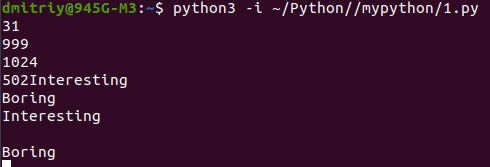

Функция print()
Вывод числа в определенном формате, дробное число в научном формате (экспоненциальном) Требуется написать программу, осуществляющую преобразование из одних единиц измерения длины в другие.Формат ввода:
Одна строка с фразой следующего вида: <number> <unit_from> in <unit_to>
например, если пришла фраза "15.5 mile in km", то требуется перевести 15.5 миль в километры.
Формат вывода: Дробное число в научном формате (экспоненциальном), с точностью ровно два знака после запятой.
"""
Программа для перевода с одной системы измерения длины в другую
"""
dict = {'mile':1609, "yard":0.9144, "foot":0.3048, "inch":0.0254, "km":1000, "cm":0.01, "mm":0.001, "m":1}
res = 0.0
str = input()
lst = str.split() # ['15.5', 'mile', 'in', 'km']
# print(lst)
for key in dict.keys():
if key == lst[1]: # зачем перебирать словарь, можно сразу было брать значение по ключу
res= float(lst[0]) * dict[key] # получили длину в метрах
# print("res=",res)
break
# теперь надо перевести длину в метрах в длину в lst[3]
if lst[3] != 'm':
for key in dict.keys():
if lst[3] == key:
res /=dict[key]
break
print("без форматирования=", res)
print("формула 10.3={:10.3f}".format(res))
print("формула 20.3={:20.3f}".format(res))
print("res через e с двумя знаками после запятой={:.2e}".format(res))
# без format
print("res через e с двумя знаками после запятой без format=%.2e"%(res))
print("res с двумя знаками после запятой без format=%.2f"%(res))
print("res с двумя знаками после запятой и всего 10 знаков, без format=%10.2f"%res)
Вывод:
15.5 mile in km
без форматирования= 24.9395
формула 10.3= 24.939
формула 20.3= 24.939
res через e с двумя знаками после запятой=2.49e+01
res через e с двумя знаками после запятой без format=2.49e+01
res с двумя знаками после запятой без format=24.94
res с двумя знаками после запятой и всего 10 знаков, без format= 24.94
|
Другое:
d = {
"mile": 1609,
"yard": 0.9144,
"foot": 0.3048,
"inch": 0.0254,
"km": 1000,
"m": 1,
"cm": 0.01,
"mm": 0.001
}
num, from_, _, to = input().split(' ')
num = float(num)
print("{0:.2e}".format(num * d[from_] / d[to]))
|
1. 2.49e+01 - это 2.49 * 10 в 1 степени = 24,9
2. print('{:3.2e}'.format(ans) - 3 - это общее число знаков в числе, 2 - число знаков после запятой.
==========================================================================================================================
Формирование строки
Формирование строки 3 способамиНапишите программу, которая считывает два имени и выводит стихотворение, в котором вместо A и B используются принятые имена.
name1 = input()
name2 = input()
# Сишный способ (через спецификаторы)
str_format = '''%s and %s sat in the tree.
%s had fallen, %s was stolen.
What's remaining in the tree?''' % (name1, name2, name1, name2)
print(str_format)
print("--------------------")
# Способ через format, меньше всего из 3 вариантов нравится
str_format = '''{0} and {1} sat in the tree.
{0} had fallen, {1} was stolen.
What's remaining in the tree?'''.format(name1, name2)
print(str_format)
print("--------------------")
# Способ через f более всех нравится
print(f'''{name1} and {name2} sat in the tree.
{name1} had fallen, {name2} was stolen.
What's remaining in the tree?''')
|
------------------------------------------------------------------------------------------------------------------------Формирование строки времени в формате hh:mm:ss
# 1 способ через format или %:
def make_readable(seconds):
#h = seconds // 3600
#minutes = (seconds % 3600) // 60
#second = seconds - h * 3600 - minutes * 60
return '{:02}:{:02}:{:02}'.format(seconds//3600, seconds%3600//60, seconds%60)
# или через сишный способ (%)
# return "%02d:%02d:%02d" % (h, m, s)
# или через f-строку:
# return f'{seconds//3600:02d}:{(seconds%3600)//60:02d}:{seconds%60:02d}'
'''
#2 способ через модуль datetime:
import datetime
def make_readable(s):
x=datetime.timedelta(seconds=s)
return x
'''
print(make_readable(0)) # "00:00:00"
print(make_readable(59)) # "00:00:59"
print(make_readable(86399)) # "23:59:59"
|
--------------------------------------------------------------------------------------------------------------------------Рисование
Напишите программу, которая выводит число в стиле LCD калькулятора. На вход программе подаётся последовательность цифр, которую нужно вывести на экран в специальном стиле. Размер всех цифр 4 символа в ширину и 7 символов в высоту. Между цифрами в выводе должен быть один пустой столбец. Перед первой цифрой не должно быть пробелов. Выведенные цифры должны быть обведены рамочкой, в углах которой находится символ x ("икс"), горизонтальная линия создаётся из символа - ("дефис"), а вертикальная из символа вертикальной черты: |.
stroka_numbers = input()
print("x" + (5 * len(stroka_numbers) - 1) * "-" + "x")
d = {'0': (' -- ', '| |', '| |', ' ', '| |', '| |', ' -- '),
'1': (' ', ' |', ' |', ' ', ' |', ' |', ' '),
'2': (' -- ', ' |', ' |', ' -- ', '| ', '| ', ' -- '),
'3': (' -- ', ' |', ' |', ' -- ', ' |', ' |', ' -- '),
'4': (' ', '| |', '| |', ' -- ', ' |', ' |', ' '),
'5': (' -- ', '| ', '| ', ' -- ', ' |', ' |', ' -- '),
'6': (' -- ', '| ', '| ', ' -- ', '| |', '| |', ' -- '),
'7': (' -- ', ' |', ' |', ' ', ' |', ' |', ' '),
'8': (' -- ', '| |', '| |', ' -- ', '| |', '| |', ' -- '),
'9': (' -- ', '| |', '| |', ' -- ', ' |', ' |', ' -- ')
}
# на цифры надо 7 строк
for i in [0, 1, 2, 3, 4, 5, 6]:
# выводим строку с индексом i
print("|", end='') # первый элемент строки
for j in range(len(stroka_numbers)): # индекс цифры в списке
print(d[stroka_numbers[j]][i], end='')
if j == (len(stroka_numbers) - 1): # лишнее, достаточно было по завершении цикла выполнить print("|")
print("|")
else:
print(" ", end='')
print("x" + (5 * len(stroka_numbers) - 1) * "-" + "x")
|
У меня решение основано на словаре, ключами являются цифры, а значения - кортеж из строк цифры. Этот словарь, я скопировал из сайта, но если самому делать, то дело это долгое. В этом случае можно скопировать строку всех цифр в список:
ss = """
x--------------------------------------------------x
| -- -- -- -- -- -- -- -- |
|| | | | | | | | | | | | | | |
|| | | | | | | | | | | | | | |
| -- -- -- -- -- -- -- |
|| | | | | | | | | | | | | |
|| | | | | | | | | | | | | |
| -- -- -- -- -- -- -- |
x--------------------------------------------------x
""".split('\n')
ds = input()
for y in range(1,10):
s = ss[y][0] # здесь похоже, чтобы не учитывать добавленные строки на предыдущих итерациях, создаем новый объект
for d in ds: # оказывается символы из строки можно вытаскивать в цикле без индекса.
x = 5 * int(d)
s += ss[y][1 + x: 6 + x] # похоже срезаем по формуле y-строку символа d и добавляем её в строку s
print(s[0:-1] + ss[y][0]) # выводим готовую y-строку и '|'. s[0:-1] - похоже тут последний символ (пробел) убираем
|
ss - список:
['',
'x--------------------------------------------------x',
'| -- -- -- -- -- -- -- -- |',
'|| | | | | | | | | | | | | | |',
'|| | | | | | | | | | | | | | |',
'| -- -- -- -- -- -- -- |',
'|| | | | | | | | | | | | | |',
'|| | | | | | | | | | | | | |',
'| -- -- -- -- -- -- -- |',
'x--------------------------------------------------x',
'']
Если бы расщепляли input() без аргумента (split()), то элементами списка были бы все последовательности между пробелами, а не все отдельные строки в случае split('\n').
===========================================================================================================================
Unicode
кодируются символы из интервала 1F600—1F64F таблицы символов Юникода. Используется кодировка UTF-8. Напишите программу, которая шифрует текст шифром Цезаря.Формат ввода:
На первой строке указывается используемый сдвиг шифрования: целое число. Положительное число соответствует сдвигу вправо. На второй строке указывается непустая фраза для шифрования.
sdvig = int(input()) % 80
str_shifr = input().strip()
print('Result: "', end="")
for simvol in str_shifr:
int_simvol = ord(simvol) # получаем десятичное значение кода символа
# print(int_simvol)
if (int_simvol + sdvig) > 128591:
modif_simvol = 128511 + (int_simvol + sdvig - 128591)
elif (int_simvol + sdvig) < 128512:
modif_simvol = 128592 + (int_simvol + sdvig - 128512)
else:
modif_simvol = int_simvol + sdvig
print(chr(modif_simvol), end="") # переводим назад в символ
print('"')
|
Не моё:
upset, string = int(input()), input()
print('Result: "', *[chr(128512 + (ord(i) - 128512 + upset) % 80) for i in string], '"', end = '', sep = '')
|
==========================================================================================================================
input() - ввод с stdin
Ввод строк до определённого условия, функция iter()Напишите программу, имитирующую обработчик команд от пользователя.
Программа должна выводить оповещение о своём состоянии в следующем формате:
Когда пользователь вводит команду, содержимое которой обозначим как
Processing "<command>" command... Например, пользователь ввёл Come to me, в таком случае должна быть выведена строка:
Processing "Come to me" command...
Считывание команд должно продолжаться до ввода команды End, при этом программа должна вывести сообщение:
Good bye!
и завершиться
lst1 = []
while True:
lst1.append(input())
if lst1[-1] == 'End':
print("Good bye!")
break
print(f"Processing \"{lst1[-1]}\" command...")
|
command = input()
while command != 'End':
print(f'Processing "{command}" command...')
command = input()
print('Good bye!')
Другое решение:
for c in iter(input,'End'):
print('Processing "{}" command...'.format(c))
print('Good bye!')
|
============================================================================================================================
Циклы:
Напишите программу, которая выводит часть последовательности 1 2 2 3 3 3 4 4 4 4 5 5 5 5 5 ... (число повторяется столько раз, чему равно). На вход программе передаётся неотрицательное целое число n — столько элементов последовательности должна отобразить программа. На выходе ожидается последовательность чисел, записанных через пробел в одну строку.Например, если n = 7, то программа должна вывести 1 2 2 3 3 3 4.
Мое решение:
k = 1
n = int(input())
m = [] # полный список
for i in range(1,n+1):
m = m + [i]*i
for a in m:
print(a,end=' ')
k += 1
if k > n:
break
print()
|
Не моё:
n = int(input())
a = []
i = 0
while len(a) < n:
a += [i] * i
i += 1
print(*a[:n])
|
-----------------------------------------------------------------------------------------------------------------Напишите программу, которая принимает на вход список чисел в одной строке и выводит на экран в одну строку значения, которые встречаются в нём более одного раза.
Моё решение:
list = [int(i) for i in input().split()]
list_end = []
i = 0
while len(list) > 1:
find_number = list[i]
list.remove(list[i])
if find_number in list and not find_number in list_end:
list_end.append(find_number)
for element in list_end:
print(element,end=' ')
|
Другое решение:
a, c = [str(i) for i in input().split()], []
for i in a:
if i not in c and a.count(i) > 1:
c.append(i)
print(i, end=' ')
|
-----------------------------------------------------------------------------------------------------------------На вход программы подаётся список чисел lst и число x. Программа должна выдавать на выход в виде одной строки позиции расположения числа х в списке чисел lst. Если число х в списке lst не обнаружено, необходимо вывести на выход строкой "Отсутствует".
lst = [int(i) for i in input().split()]
x = int(input())
# Перебрать список lst по элементам
# каждый элемент сравнивать с x
# если совпадает, то напечатать индекс
# если же нет, то следующий элемент вытаскиваем
i = 0 # определяем переменную, иначе будет ошибка
if x not in lst:
print('Отсутствует')
else:
for lst[i] in lst:
if lst[i] == x:
print(i, end=' ')
i += 1
# 1. Ошибка IndexError: list assignment index out of range возникает в Python, когда нельзя присвоить значение элементу,
который ещё не существует в списке. Ошибку устранил, когда в for num[i] in lst: num[i] поменял на lst[i]
# 2. В for lst[i] in lst: i автоматически не прибавляет на 1
Не моё решение:
lst, x = input().split(), input()
if x in lst:
for i in range(len(lst)):
if lst[i] == x:
print(i, end=' ')
else:
print('Отсутствует')
В этом решении цикл по индексу списка, а не по элементу списка, как у меня.
-----------------------------------------------------------------------------------------------------------------Напишите программу, на вход которой подаётся прямоугольная матрица в виде последовательности строк. После последней строки матрицы идёт строка, содержащая только строку "end"
Программа должна вывести матрицу того же размера, у которой каждый элемент в позиции i, j равен сумме элементов первой матрицы
на позициях (i-1, j), (i+1, j), (i, j-1), (i, j+1). У крайних символов соседний элемент находится с противоположной стороны
матрицы.
В случае одной строки/столбца элемент сам себе является соседом по соответствующему направлению.
table = []
while True:
table.append([x for x in input().split()])
if table[-1] == ['end']:
break
# удалим end
table.remove(['end'])
# str - количество элементов в table - это коли-во строк матрицы
# stolb - количество элементов в элементе table - это коли-во столбцов матрицы
if len(table) == 1:
delta_str = 0
else:
delta_str = 1
if len(table[0]) == 1:
delta_stolb = 0
else:
delta_stolb = 1
for str in range(len(table)): # по строкам
if str == len(table) - 1:
str = str - len(table)
for stolb in range(len(table[str])):
if stolb == len(table[str]) - 1:
stolb = stolb - len(table[str])
print(int(table[str + delta_str][stolb]) + int(table[str - delta_str][stolb]) + \
int(table[str][stolb + delta_stolb]) + int(table[str][stolb - delta_stolb]), end=' ')
print()
|
Другое решение:
a = [[int(i) for i in input().split()]]
b = input()
while b != 'end' :
a.append([int(i) for i in b.split()])
b = input()
for i in range(len(a)):
for j in range(len(a[i])):
print((a[i-1][j] + a[(i+1) % len(a)][j] + a[i][j-1] + a[i][(j+1) % len(a[i])]), end=' ')
print()
Еще решение:
c = []
while True:
a = [i for i in input().split()]
if a == ['end']:
break
c.append(a)
n, m = len(c), len(c[0])
for i in range(n):
for j in range(m):
x = int(c[i][j-1]) + int(c[i][j+1-m]) + int(c[i-1][j]) + int(c[i+1-n][j])
print(x, end=' ')
print()
|
-----------------------------------------------------------------------------------------------------------------После дрессировки черепашка научилась понимать и запоминать указания биологов следующего вида:
север 10
запад 20 юг 30
восток 40
где первое слово — это направление, в котором должна двигаться черепашка, а число после слова — это положительное расстояние в сантиметрах, которое должна пройти черепашка.
Но команды даются быстро, а черепашка ползёт медленно, и программисты догадались, что можно написать программу, которая определит, куда в итоге биологи приведут черепашку. Для этого программисты просят вас написать программу, которая выведет точку, в которой окажется черепашка после всех команд. Для простоты они решили считать, что движение начинается в точке (0, 0), и движение на восток увеличивает первую координату, а на север — вторую.
Программе подаётся на вход число команд n, которые нужно выполнить черепашке, после чего n строк с самими командами. Вывести нужно два числа в одну строку: первую и вторую координату конечной точки черепашки. Все координаты целочисленные.
x = 0
y = 0
command = [input() for _ in range(int(input()))]
for str in command:
if str.split()[0] == 'запад':
x = x - int(str.split()[1])
elif str.split()[0] == 'восток':
x += int(str.split()[1])
elif str.split()[0] == 'юг':
y = y - int(str.split()[1])
else: # север +y
y += int(str.split()[1])
print(x, y)
|
Другое:
dict = {'север': 0, 'юг': 0, 'запад': 0, 'восток': 0}
for _ in range(int(input())):
key, value = input().split()
dict[key] += int(value)
print(dict['восток'] - dict['запад'], dict['север'] - dict['юг'])
|
--------------------------------------------------------------------------------------------------------------------------Пропуск итерации в цикле
В римской системе счисления для обозначения чисел используются следующие символы (справа записаны числа, которым они соответствуют в десятичной системе счисления):
I = 1 V = 5 X = 10 L = 50 C = 100 D = 500 M = 1000Будем использовать вариант, в котором числа 4, 9, 40, 90, 400 и 900 записываются как вычитание из большего числа меньшего: IV, IX, XL, XC, CD и CM, соответственно.
Напишите программу, которая переводит число из римской в десятичную систему счисления.
r_dict = {'I' : 1, 'V' : 5, 'X' : 10, 'L' : 50, 'C' : 100, 'D' : 500, 'M' : 1000}
r_number = input() + '/' # MCMLXXXIV
#r_number = input()
number = 0
i = 0
# for i in range(len(r_number)-1):
while i < len(r_number):
print(i)
if r_number[i] == '/':
break
if r_number[i+1] == '/' or r_dict[r_number[i]] >= r_dict[r_number[i+1]]:
number += r_dict[r_number[i]]
elif r_dict[r_number[i]] < r_dict[r_number[i+1]]:
number += (r_dict[r_number[i+1]] - r_dict[r_number[i]])
i += 1
i +=1
print(number)
print(number)
|
a = {'I': 1, 'V': 5, 'X': 10, 'L': 50, 'C': 100, 'D': 500, 'M': 1000}
text = input()
sum = 0
for i in range(len(text)-1): # пропускаем последний элемент, чтобы потом его вручную прибавить
if a[text[i]] < a[text[i + 1]]:
sum -= a[text[i]]
else:
sum += a[text[i]]
sum += a[text[len(text)-1]] # не надо придумывать костыль с последним элементом
print(sum)
|
Другое:
a, d, temp, s = {'I': 1, 'V' : 5, 'X' : 10, 'L': 50, 'C': 100, 'D': 500, 'M': 1000},0, 0, input()[::-1]
for i in s:
d += a[i] if temp <= a[i] else -a[i]
temp = a[i]
print(d)
input()[::-1] переворачивает строкуИдём с обратной стороны строки, если предыдущий символ больше текущего, то вычитаем из результата текущий, иначе прибавляем |
1. как в for i in range(len(n)): следующую итерацию пропустить
В for i in range(len(n)): никак не пропустишь i, поэтому лучше использовать другой цикл while, где счетчик вручную увеличивают.
2. Ошибка «TypeError: 'type' object is not subscriptable» в Python возникает, когда пытаются получить доступ к элементу объекта, используя индекс, а объект не поддерживает такую операцию.
======================================================================================================================
Числа
Сокращенная запись операций с числамиНапишите функцию, которая для заданного натурального числа n генерирует последовательность чисел, описанную в гипотезе Коллатца:
Если n четное, то делим его пополам, если нечётное, то умножаем на 3 и прибавляем 1. С итогом вычисления снова проделываем эту операцию до тех пор, пока в результате не будет получено число 1.
n = int(input())
print(n, end=' ')
while n != 1:
if n % 2 == 0:
n //= 2
else:
n = n * 3 + 1
# n (*= 3) +1 SyntaxError: invalid syntax
# n *= 3 + 1 # 68
#(n *= 3) + 1 SyntaxError: invalid syntax
print(n, end=' ')
|
Здесь интересно, что если n *= 3 + 1 и n=17, то результат будет 68, а не 52. И как не пробовал сокращенно записать, не получилось.
-------------------------------------------------------------------------------------------------------------------------Напишите программу, которая принимает на вход список чисел и число, после чего выводит все позиции, на которых это число встречается в переданном списке. Позиции в списке нумеруются с нуля. Если число x не найдено в списке, нужно вывести строку "None" (без кавычек, с большой буквы).
lst_int = input().split()
number = int(input())
a = None
for i in range(len(lst_int)):
if number == int(lst_int[i]):
print(i, end=' ')
a = 1
if (a == None):
print(a)
#[print(i, end=' ') for i in range(len(lst_int)) if number == int(lst_int[i])]
|
s = input().split(' ')
sub = input()
print(*([i for i, x in enumerate(s) if x == sub] or ['None']), sep=' ')
Если получим пустой список, то он с точки зрения логики считается как False, а список со строкой "None" будет не пустой всегда, т.е. истина! Эта строка и выведется, т.к. впереди списка - звездочка. А если список не пустой (он считается "Тру"), то выведутся его элементы, поскольку второй список - со строкой "Нан" не будет при этом рассматриваться. Вот так это работает. |
a = input().split()
n = input()
if not n in a:
print("None")
else:
for i in range(len(a)):
if a[i] == n:
print(i)
Без создания переменной a, как у меня. И сравниваюся строки, нет лишнего перевода в числа. |
-----------------------------------------------------------------------------------------------------------------------в stdin вводим последовательность чисел, получаем из нее список чисел, функция map()
Последовательность n>0 целых чисел называется jolly jumper в случае, если значения абсолютных разностей последовательных элементов принимают все возможные значения между 1 и n−1.
Например, последовательность 1 -3 -4 -1 1 является jolly jumper последовательностью.
Будем считать, что последовательность из одного числа является jolly jumper.
Напишите программу, которая проверяет, является ли введённая последовательность jolly jumper.
lst_int = list(map(int, input().split()))
new_lst = []
n = len(lst_int)
for i in range(1, n):
new_lst.append(abs(lst_int[i] - lst_int[i-1]))
new_lst.sort()
print("сортированный список=", new_lst)
print([i for i in range(1, n)])
if new_lst == [i for i in range(1, n)]:
print("Jolly")
else:
print("Not jolly")
|
Другое:
x=list(map(int,input().split()))
y=list(map(lambda i, j: abs(i - j), x[0:-1], x[1:]))
print(['Not jolly','Jolly'][set(range(1,len(x)))==set(y)])
Другое, похожее на мое, только упакованное:
a = [int(i) for i in input().split()]
print('Jolly' if sorted([abs(a[i]-a[i+1]) for i in range(len(a)-1)]) ==
[i for i in range(1,len(a))] else 'Not jolly')
|
---------------------------------------------------------------------------------------------------------------------Записать в 2 переменные через input последовательность из 2 чисел
n1, n2 = [int(x) for x in input().split()]
# или: n1, n2 = map(int, input().split())
for i in range(n1, n2+1):
if i % 3 == 0 and i % 5 != 0:
print("Fizz")
elif i % 5 == 0 and i % 3 != 0:
print("Buzz")
elif i % 5 == 0 and i % 3 == 0:
print("FizzBuzz")
else:
print(i)
|
Другое:
start, end = map(int, input().split())
for i in range(start, end + 1):
print('Fizz' * (i % 3 == 0) + 'Buzz' * (i % 5 == 0) or i)
|
--------------------------------------------------------------------------------------------------------------------------Сокращенная запись арифметических операций
Перевод чисел из римской системы в арабскую
number = int(input())
dict1 = {1000: 'M',900: 'CM',500: 'D', 400: 'CD', 100: 'C', 90: 'XC', 50: 'L', 40: 'XL', 10: 'X', 9: 'IX', 5: 'V', 4: 'IV', 1: 'I'}
str1 = ''
for key in dict1:
if number / key >= 1:
str1 += (number // key) * dict1[key]
number %= key
print(str1)
|
1. UnboundLocalError: local variable 'str1' referenced before assignment
Перетащил str1 из глобальной области внутрь функции и делаю возврат str1
========================================================================================================================
Множество
Преобразование списка в строку и назад в список с целью сделать список из отдельных словМножество из списка.
Методы цепочкой
На вход программе первой строкой передаётся количество d известных нам слов, после чего на d строках указываются эти слова. Затем передаётся количество l строк текста для проверки, после чего l строк текста.
Выведите уникальные "ошибки" в произвольном порядке. Работу производите без учёта регистра.
list1 = []
list2 = []
d = int(input())
for i in range(d):
list1.append(input().lower())
l = int(input())
for i in range(l):
list2.append(input().lower())
'''print(list2) # список из фраз
list2 = ' '.join(list2) # преобразовали список в одну строку без запятых
list2 = list2.split() # преобразовали строку назад в список но из отдельных слов
'''
list2 = ' '.join(list2).split()
list2 = set(list2)
print(list2)
for i in list2:
if i not in list1:
print(i)
|
list1 = list1.append(input()) AttributeError: 'NoneType' object has no attribute 'append'Устранил ошибку, когда изменил выражение list1 = list1.append(input()) на list1.append(input()) Другое решение:
Способ создания множества/списка из нескольких вводов одной строкой
# формируем множество известных слов на основании построчного ввода
dic = {input().lower() for _ in range(int(input()))}
# заводим пустое множество для приема текста
wrd = set()
# т.к. текст построчно подается, а также в каждой строке несколько слов,
# то каждую строку превращаем во множество и добавляем в единое множество wrd
for _ in range(int(input())):
wrd |= {i.lower() for i in input().split()}
# на вывод отправляем результат вычитания словарного множества dic
# из текстового множества wrd; впереди ставим *, чтобы раскрыть поэлементно
print(*(wrd-dic), sep="\n")
wrd |= {...} отвечает за добавление множества {...} в единое wrd (аналог метода update)заменил ненужные символы переменных на _
----------------------------------------------------------------------------------------------------
Множество
применение одновременно нескольких методов
Программа должна считывать одну строку со стандартного ввода и выводить для каждого уникального слова в этой строке число его повторений (без учёта регистра) в формате "слово количество".
Порядок вывода слов может быть произвольным, каждое уникальное слово должно выводиться только один раз.
str = input().lower().split()
for i in set(str):
print(i, str.count(i)
-------------------------------------------------------------------------------------------------------------------------Напишите программу, которая принимает на вход список целых чисел и выводит на экран значения, которые повторяются в нём более одного раза.
list_int = input().split()
set_int = set()
for n in list_int:
if list_int.count(n) > 1:
set_int.add(n)
for n in set_int:
print(n, end=' ')
|
a = input().split() b = set(a) print(*[i for i in b if a.count(i) > 1]) |
======================================================================================================================
Строки
Examples:
accum("abcd") -> "A-Bb-Ccc-Dddd"
accum("RqaEzty") -> "R-Qq-Aaa-Eeee-Zzzzz-Tttttt-Yyyyyyy"
accum("cwAt") -> "C-Ww-Aaa-Tttt"
Мое:
def accum(st):
lst1 = []
for i in range(1,len(st)+1):
lst1.append((st[i-1] * i).title())
return '-'.join(lst1)
print(accum("ZpglnRxqenU"))
|
def accum(s):
return '-'.join(c.upper() + c.lower() * i for i, c in enumerate(s))
|
---------------------------------------------------------------------------------------------------------------------------Объединение строк, сортировка списка по длине элементов sort()
Даны список слов strarr и число k .
Нужно получить список из соединенных k раз элементов strarr и вернуть самое длинное.
Если k больше длины массива или k = 0, то вернуть ""
Мое:
def longest_consec(strarr, k):
if len(strarr) == 0 or k > len(strarr) or k <= 0:
return ""
else:
list_words = []
for i in range(len(strarr)-k+1):
word = ''
for j in range(i, i+k):
word +=strarr[j]
list_words.append(word)
list_words.sort(key=lambda s: len(s), reverse=True)
return list_words[0]
print(longest_consec([], 3))
|
Не моё:
def longest_consec(strarr, k):
result = ""
if k > 0 and len(strarr) >= k:
for index in range(len(strarr) - k + 1):
s = ''.join(strarr[index:index+k])
if len(s) > len(result):
result = s
return result
|
В строке list_words.sort(key=lambda s: len(s), reverse=True)
для сортировки по длине элементов применил ключ len(s), reverse=True означает, что элементы будут располагаться по убыванию длины.
В s = ''.join(strarr[index:index+k])
берём сразу срез элементов (не через цикл как у меня) и преобразуем в строку.
Наверное решение можно было сформировать двигаясь от искомого решения к заданным условиям задачи:
результат нужен в виде наибольшей строки, значит объявляем строку result
далее нужно было вспомнить про срезы списков и метод преобразования списков в строку - join
----------------------------------------------------------------------------------------------------------------------Преобразование строки, копирование в пустую строку, библиотека itertools, регулярные выражения
Кодирование длин серий — это базовый алгоритм сжатия данных.
На вход алгоритму подаётся строка, содержащая символы латинского алфавита. Эта строка разбивается на группы одинаковых символов, идущих подряд ("серии"). Каждая серия характеризуется повторяющимся символом и количеством повторений. Именно эта информация и записывается в код: сначала пишется длина серии повторяющихся символов, затем сам символ. У серий длиной в один символ количество повторений будем опускать.
Например, рассмотрим строку: aaabccccCCaB
Разобъём её на серии
aaa b cccc CC a B
После чего закодируем серии и получим итоговую строку, которую и будем считать результатом работы алгоритма:
3ab4c2CaB
Мое:
str1 = input()
count = 1
str2 =''
if len(str1) == 1:
print(str1)
else:
for i in range(1, len(str1)):
if str1[i] != str1[i-1]:
if count == 1:
str2 +=str1[i-1]
if i == len(str1) - 1:
str2 +=str1[i]
else:
str2 += str(count)+str1[i-1]
count = 1
else:
if i == len(str1) - 1:
str2 += str(count+1)+str1[i-1]
count +=1
print(str2)
|
Похожее на моё:
s = input()+ ' '
first_index = -1
for i in range(len(s)-1):
if (s[i] != s[i+1]):
# count, first_index = i - first_index, i
# Эта строчка эквивалентна:
count = i - first_index
first_index = i
print(str(count)*(count > 1) + s[i], end = '')
# Можно так:
print(str(count) + s[i] if count > 1 else s[i], end='')
1. В самой нижней строчке (count > 1) - это условие, если не истинно, тогда str(count) не будет выводиться
2. Добавляемый пробел никак не влияет на вывод, как бы его не существует. |
1. Как в список в качестве одно элемента передать число со строкой
Не работает tmp_str = chr + str(count) Получаю:
TypeError: 'str' object is not callable
Проблему решил когда имя строки поменял с str на str1
Больше не называть строковый объект по имени str
Через модуль библиотеки itertools
from itertools import groupby
for i, j in groupby(input()):
c = len(list(j))
print(str(c)*(c > 1), i, sep='', end='')
print(i) # 3ab4c2CaBB
print(j) # <itertools._grouper object at 0x7...>
|
Через регулярку:
import re
#получаем серии в виде списка кортежей
# для: aaabccccCCaB
# [('aaa', 'a'), ('b', 'b'), ('cccc', 'c'), ('CC', 'C'), ('a', 'a'), ('B', 'B')]
series = re.findall(r'(([a-zA-Z])\2*)', input())
# Другой вариант: re.findall(r'((\w)\2*)', input())
#формируем строку, удаляя длины, равные 1
print(''.join([re.sub(r'\b1\b', '',str(len(crt[0])))+crt[1] for crt in series]))
|
-----------------------------------------------------------------------------------------------------------------------
Подсчёт символов в строке.
def count(s):
dict_ch = {}
for ch in set(s):
dict_ch[ch] = s.count(ch)
return dict_ch
print(count('aba'))
|
------------------------------------------------------------------------------------------------------------------------Подсчёт уникальных слов в строке, метод Counter модуля collections
Когда Антон прочитал «Войну и мир», ему стало интересно, сколько слов и в каком количестве используется в этой книге. Помогите Антону написать упрощённую версию такой программы, которая сможет подсчитать слова, разделённые пробелом и вывести получившуюся статистику. Программа должна выводить для каждого уникального слова число его повторений (без учёта регистра).
'''
Способы чтения и файлов и stdin:
import fileinput
for line in fileinput.input():
print(line)
import sys
for line in sys.stdin:
print(line)
'''
lst_str = input().lower().split()
print(lst_str)
set_str = set(lst_str)
print(set_str)
for word in set_str:
print(word, lst_str.count(word))
|
s=input().lower().split() [print(i, s.count(i)) for i in set(s)]Говорят, что так делать не стоит. Сложность этого решения O(n^2), то есть нужно пройтись по списку n раз для каждого элемента. причем O=Θ, то есть в самом лучшем и худшем варианте всегда будет сложность O(n^2). Для очень больших n расчет будет очень долгим. Если же воспользуетесь встроенной функцией Counter from collections, то сложность будет всего O(n). |
from collections import Counter
text = input().lower().split()
d = Counter(text)
for i in d:
print(i, ' ', d[i])
# d = Counter(text) для 'a aa abC aa ac abc bcd a' вернёт словарь Counter({'a': 2, 'aa': 2, 'abc': 2, 'ac': 1, 'bcd': 1})
По умолчанию в цикле берут ключ словаря |
------------------------------------------------------------------------------------------------------------------------Метод строки replace(), замена отдельных символов в предложении
Ваша задача - написать функцию, которая принимает строку и возвращает новую строку с удаленными гласными. Например, строка "This website is for losers LOL!" станет "Ths wbst s fr lsrs LL!".
def disemvowel(string_):
vowels = 'aeiouAEIOU'
for vowel in vowels:
string_ = string_.replace(vowel, '')
return string_
print(disemvowel("This website is for losers LOL!"))
Через метод replace() |
Другое:
def disemvowel(string):
return "".join(c for c in string if c.lower() not in "aeiou")
С помощью генератора кортежа |
=========================================================================================================================
Список
Шифр Цезаря заключается в замене каждого символа входной строки на символ, находящийся на несколько позиций левее или правее его в алфавите.Для всех символов сдвиг один и тот же. Сдвиг циклический, т.е. если к последнему символу алфавита применить единичный сдвиг, то он заменится на первый символ, и наоборот.
Напишите программу, которая шифрует текст шифром Цезаря.
Используемый алфавит − пробел и малые символы латинского алфавита: ' abcdefghijklmnopqrstuvwxyz'
sdvig = int(input())
alfavit = ' abcdefghijklmnopqrstuvwxyz'
str_shifr = input().strip()
sdvig = sdvig % len(alfavit)
print(sdvig)
print('Result: "', end="")
for simvol in str_shifr:
index = alfavit.find(simvol)
if (index + sdvig) >= len(alfavit):
other_simvol = alfavit[index+sdvig-len(alfavit)]
else:
other_simvol = alfavit[index+sdvig]
print(other_simvol, end="")
print('"')
|
shift = int(input())
s_in = input().strip()
s_out = ''
abc = ' abcdefghijklmnopqrstuvwxyz'
for i in s_in:
s_out += abc[(abc.find(i) + shift)%27]
print(f'Result: "{s_out}"')
|
1. Можно было весь код заменить после 2 строки на:
res = [abc[(abc.index(c) + n) % len(abc)] for c in inp]
print('Result: "' + ''.join(res) + '"')
2. Специально для таких задач в языке Питон созданы методы строки: maketrans и translate . Первый - создаёт словарь соответствия алфавит - шифр, второй - кодирует данную строку согласно этому словарю. Вместо вызова функции maketrans можно подставить и свой словарь. https://www.tutorialspoint.com/python3/string_translate.htm
----------------------------------------------------------------------------------------------------------------------Сортировка множества, генератор списка
На вход программе подаётся строка, содержащая слова, разделённые пробелом. Программа должна вывести статистику длин слов в полученной строке, от меньшей длины слова к большей
lst_statist = [len(word) for word in input().split()] # генерируем из строки слов список из слов
lst_set_length = list(set(lst_statist)) # преобразуем в множество и сразу в список, в 3 примере sorted сразу к множеству
# print(lst_set_length)
for number in sorted(lst_set_length):
print(f'{number}: {lst_statist.count(number)}')
|
lib = {}
for item in input().split():
lib[len(item)] = lib.get(len(item), 0) + 1
for key, value in sorted(lib.items()):
print(key, ": ", value, sep='')
|
s = input()
lst = list(map(len, s.split()))
for i in sorted(set(lst)): # непонятно, функция sorted применена к множеству, получается необязательно преобразовывать в список
print('{}: {}'.format(i, lst.count(i)))
|
------------------------------------------------------------------------------------------------------------------------Функция join() преобразует список в строку.
В какой-то момент вам надоело использовать имена файлов с пробелами и вы решили написать программу, которая переименовывает все файлы, содержащие пробелы в имени, заменив группы пробелов на символ подчёркивания "_".
lst_str = list(input().strip())
new_lst =[]
for i in range(len(lst_str)):
if lst_str[i] == ' ' and new_lst[-1] != '_':
new_lst.append('_')
continue
if lst_str[i] == ' ' and new_lst[-1] == '_':
continue
new_lst.append(lst_str[i])
print(''.join(new_lst))
|
Часа два думал над тем как в Решениях одной строкой сделали:
print('_'.join(input().split()))
input().split() получает список элементов без разницы сколько пробелов между этими элементами в введённой строке.
------------------------------------------------------------------------------------------------------------------------Замена элемента-символа на число, создание копии списка, считывание ввода из нескольких строк одинаковой длины в прямоугольную матрицу
Напишите программу, вычисляющую следующее состояние поля для Game of life.
import copy
n, m = map(int, input().split())
lst1 = []
for _ in range(n):
lst1.append(input())
lst2 = []
lst3 = []
# в lst1 записываем единицы нолики вместо . и X в lst1
for row in range(n):
for col in range(m):
if lst1[row][col] == '.':
lst2.append(0)
else:
lst2.append(1)
lst2 = [[lst2[i*m + j] for j in range(m)] for i in range(n)]
'''
# Этот код можно было реализовать одной строкой:
# a = [[int(c == 'X') for c in input()] for _ in range(n)]
lst3 = copy.deepcopy(lst2)
for row in range(n):
for col in range(m):
'''
Не подходит для случая n = 1 (1 список внутри списка)
if row == n - 1:
row = -1
if col == m - 1:
col = -1
summa = lst2[row-1][col-1] + lst2[row-1][col] + lst2[row-1][col+1] + lst2[row][col-1] + lst2[row][col+1] +
lst2[row+1][col-1] + lst2[row+1][col] + lst2[row+1][col+1]
'''
summa1 = lst2[(row - 1) % n][(col - 1) % m]
summa2 = lst2[(row - 1) % n][(col) % m]
summa3 = lst2[(row - 1) % n][(col + 1) % m]
summa4 = lst2[(row) % n][(col - 1) % m]
summa5 = lst2[(row) % n][(col + 1) % m]
summa6 = lst2[(row + 1) % n][(col - 1) % m]
summa7 = lst2[(row + 1) % n][(col) % m]
summa8 = lst2[(row + 1) % n][(col + 1) % m]
summa = summa1 + summa2 + summa3 + summa4 + summa5 + summa6 + summa7 + summa8
#print("row=", row, "col=", col, "summa=", summa)
if summa < 2 or summa > 3:
lst3[row][col] = 0
if summa == 3:
lst3[row][col] = 1
for row in range(n):
for col in range(m):
if lst3[row][col] == 0:
lst3[row][col] = '.'
else:
lst3[row][col] = 'X'
print(lst3[row][col], end='')
if col == m - 1: print()
|
1. TypeError: 'str' object does not support item assignment
Как элемент списка типа строка заменить на число
Никак. Просто создаем новый список lst3 и в нём присваиваем значения из списка lst2
-------------------------------------------------------------------------------------------------------------------------codewars 4 kuy
Как не выйти за пределы списка при сравнении текущего эемента со следуюшим
Завершите решение так, чтобы оно принимало список целых чисел в порядке возрастания и возвращало правильно отформатированную строку в формате диапазона:
solution([-10, -9, -8, -6, -3, -2, -1, 0, 1, 3, 4, 5, 7, 8, 9, 10, 11, 14, 15, 17, 18, 19, 20]) # returns "-10--8,-6,-3-1,3-5,7-11,14,15,17-20"
def solution(args):
modify_list = []
i = 0
while i < len(args):
count = 0
if i == len(args)-1:
modify_list.append(str(args[i]))
else:
if args[i] != args[i+1] -1:
modify_list.append(str(args[i]))
else:
while ((i+count+1) < len(args)) and (args[i+count] == args[i+count+1] -1):
count +=1
if count < 2:
modify_list.append(str(args[i]))
count = 0
else:
modify_list.append(str(args[i])+'-'+str(args[i+count]))
i = i+count+1
return ','.join(modify_list)
print(solution([-6,-3,-2,-1,0,1,3,4,5,7,8,9,10,11,14,15,17,18,19,20,22]))
# '-6,-3-1,3-5,7-11,14,15,17-20,22'
|
def solution(args):
out = []
beg = end = args[0]
for n in args[1:] + [""]:
if n != end + 1:
if end == beg:
out.append( str(beg) )
elif end == beg + 1:
out.extend( [str(beg), str(end)] )
else:
out.append( str(beg) + "-" + str(end) )
beg = n
end = n
return ",".join(out)
|
Чтобы не выйти за пределы списка при сравнении элемента со следующим в Python, можно было к списку добавить какой-нибудь не числовой элемент типа "" . Я не реализовал эту идею.
В цикле иногда происходит скачок сразу на несколько индексов, поэтому for для цикла не подходит.
===========================================================================================================================
Словарь
Напишите программу, которая определяет, бьёт ли одна карта другую. Если встречаются две карты одной масти, то побеждает та, у которой выше значение; Если карты разных мастей, то карта, имеющая козырную масть, побеждает; Если карты разных мастей и нет козырных, то никто не побеждает. Программа должна вывести слово First, если первая карта бьёт вторую, Second, если вторая карта бьёт первую, Error, если ни одна из карт не может побить другую.
force_card = {'6': 6, '7': 7, '8': 8, '9': 9, '10': 10, 'J': 11, 'Q': 12, 'K': 13, 'A': 14}
card1, card2 = [str(i) for i in input().split()] # проще так: first, second = input().split()
# print(card1)
# print(card2)
print(card1[:-1])
print(type(card1[:-1]))
kozir = input()
if card1[-1] == card2[-1]: # так как количество знаков в строке может быть 2 или 3 (разное), то берем по индексу -1
if force_card[card1[:-1]] > force_card[card2[:-1]]:
print("First")
else:
print("Second")
else:
if card1[-1] != kozir and card2[-1] != kozir:
print("Error")
elif card1[-1] == kozir:
print("First")
elif card2[-1] == kozir:
print("Second")
|
1. force_card = {'6': 6, '7': 7, '8': 8, '9': 9, '10': 10, 'J': 11, 'Q': 12, 'K': 13, 'A': 14}
Ключи берем в кавычки потому что интепретатор сайта выдает ошибку при ранге карты =10 на строке if force_card[card1[:-1]] > force_card[card2[:-1]]:
2. force_card[card1[:-1]] - это из синтаксиса взятия подстроки из строки. str[:-1] берем все символы из строки кроме последнего.
-------------------------------------------------------------------------------------------------------------------------Напишите программу, которая умеет шифровать и расшифровывать шифр подстановки. Программа принимает на вход две строки одинаковой длины, на первой строке записаны символы исходного алфавита, на второй строке — символы конечного алфавита, после чего идёт строка, которую нужно зашифровать переданным ключом, и ещё одна строка, которую нужно расшифровать.
str_zashifr = []
str_shifr = []
shifr_rashifr = []
alfavit = {key:0 for key in input()}
shifr = input()
# сопоставляем ключу alfafit значение из shifr
i = 0
for key in alfavit.keys():
alfavit[key] = shifr[i]
i +=1
#print(alfavit)
str = input()
str_shifr = input()
for l in str:
str_zashifr +=alfavit[l]
# print(*str_zashifr)
for l in str_zashifr:
print(l, end='')
print()
# Перевернем словарь
inv_alfavit = {v: k for k, v in alfavit.items()}
for l in str_shifr:
shifr_rashifr += inv_alfavit[l]
for l in shifr_rashifr:
print(l, end='')
print()
Создал словарь через input()Использовал переворачивание словаря. |
Ещё решение:
a,b,c,d=input(),input(),input(),input()
print(''.join(b[a.index(i)] for i in c))
print(''.join(a[b.index(i)] for i in d))
|
-----------------------------------------------------------------------------------------------------------------Словарь
Напишите программу, которая прочитает этот файл и подсчитает для каждого класса средний рост учащегося.
Файл состоит из набора строк, каждая из которых представляет собой три поля:
Класс Фамилия Рост
Класс обозначается только числом. Буквенные модификаторы не используются. Номер класса может быть от 1 до 11 включительно. В фамилии нет пробелов, а в качестве роста используется натуральное число, но при подсчёте среднего требуется вычислить значение в виде вещественного числа.
Выводить информацию о среднем росте следует в порядке возрастания номера класса (для классов с первого по одиннадцатый). Если про какой-то класс нет информации, необходимо вывести напротив него прочерк.
d = {key:[0, 0] for key in range(1,12)} # создали словарь
with open('/home/dmitriy/Python/mypython/dataset_3380_5.txt') as f:
for line in f:
#print(line.split()[0])
# создадим словарь d, где ключ будет от 1 до 11, а значения сумма ростов и счетчик школьников
# значение словаря список из двух чисел: d[key][0] и d[key][1]
d[int(line.split()[0])] = [d[int(line.split()[0])][0] + int(line.split()[2]), d[int(line.split()[0])][1] + 1]
for key in d.keys():
if d[key][1] == 0:
print(key, '-')
else:
print(key, d[key][0] / d[key][1])
|
Другое решение, похоже на мое, но синтаксис грамотный
# Делаем словарь {1:[0,0], 2:[0,0]... 11:[0,0]}, где [0:0] = [сумма ростов : кол-во учеников]
tab = {i:[0,0] for i in range(1,12)}
with open ('dataset_3380_5.txt') as inf:
# Заполняем словарь:
for i in inf:
line = i.strip().split('\t')
tab [ int(line[0]) ] [0] += int(line[2]) # tab[класс][0] += рост ученика
tab [ int(line[0]) ] [1] += 1 # tab[класс][1] += 1 (счетчик учеников в классе)
# Распечатка:
for i in tab.keys():
if tab[i][1] == 0:
print (i, '-') # распечатываем класс, в котором нет учеников
else:
# считаем и распечатываем средний рост для i-го класса:
print (i, ( tab[i][0] / tab[i][1] ))
|
-----------------------------------------------------------------------------------------------------------------Напишите программу, которая считывает строку с числом n, которое задаёт количество чисел, которые нужно считать. Далее считывает n строк с числами xi, по одному числу в каждой строке. Итого будет n+1 строк. При считывании числа xi программа должна на отдельной строке вывести значение f(xi). Функция f(x) уже реализована и доступна для вызова. Функция вычисляется достаточно долго и зависит только от переданного аргумента x. Для того, чтобы уложиться в ограничение по времени, нужно избежать повторного вычисления значений.
Моё:
n = int(input())
l = []
d = {}
for i in range(n):
l.append(int(input()))
'''Проходим каждый элемент списка
Вычисляем функцию и добавляем i и f в словарь
Если на следующем элементе уже вычисляли функцию (входит в словарь),
то выводим значение для текущего ключа из словаря'''
for i in l:
if i not in d.keys(): # еще не выполняли функцию по этому числу
d[i] = f(i)
print(i, f(i))
else:
print(i, d[i])
|
Другое:
a=[int(input()) for i in range(int(input()))]
b={x:f(x) for x in set(a)}
for i in a:
print(b[i])
Ещё:
d = {}
for _ in range(int(input())):
x = int(input())
if x not in d:
d[x] = f(x)
print(d[x])
|
---------------------------------------------------------------------------------------------------------------------Игра: минное поле, считывание многострочной строки в словарь, считывание двух чисел через пробел
Поле для игры сапёр представляет собой сетку размером n×m. В ячейке сетки может находиться или отсутствовать мина.
Напишите программу, которая выводит "решённое" поле, т.е. для каждой ячейки, не являющейся миной, указывается число мин, находящихся в соседних ячейках (учитывая диагональные направления).
Моё:
n, m = map(int, input().split())
board = {}
for row_index in range(n):
row_str = input()
for column_index in range(m):
board[(row_index, column_index)] = row_str[column_index]
# print(board[(row_index, column_index)], end='')
for row_index in range(n):
for column_index in range(m):
if board[(row_index, column_index)] == '.':
count = 0
if (row_index > 0 and column_index > 0 and board[(row_index-1, column_index-1)] == '*'):
count +=1
if (row_index > 0 and board[(row_index-1, column_index)] == '*'):
count +=1
if (row_index > 0 and column_index < (m-1) and board[(row_index-1, column_index+1)] == '*'):
count +=1
if (column_index > 0 and board[(row_index, column_index-1)] == '*'):
count +=1
if (column_index < (m-1) and board[(row_index, column_index+1)] == '*'):
count +=1
if (row_index < (n-1) and column_index > 0 and board[(row_index+1, column_index-1)] == '*'):
count +=1
if (row_index < (n-1) and board[(row_index+1, column_index)] == '*'):
count +=1
if (row_index < (n-1) and column_index < (m-1) and board[(row_index+1, column_index+1)] == '*'):
count +=1
board[(row_index, column_index)] = count
print(board[(row_index, column_index)], end='')
if column_index == (m-1):
print()
|
1. Можно было записать строку минного поля в список списков:
mines = []
for i in range(n):
mines += [input()]
и элементы этого списка имеют два индекса: mines[i][j], где i - это номер внутреннего списка в общем списке, а j - это номер символа во внутреннем списке.
2. Можно было подсчет мин сделать без 8 условий:
for i in range(1, n + 1):
for j in range(1, m + 1):
print('*' if a[i][j] == '*'
else sum(a[x][y] == '*' for x in (i - 1, i, i + 1) for y in (j - 1, j, j + 1)), end='')
---------------------------------------------------------------------------------------------------------------------
====================================================================================================================
Алгоритмы:
Матрицы
Квадратная матрица, заполняемая по спирали, создание матрицыВыведите таблицу размером n×n, заполненную числами от 1 до n 2 по спирали, выходящей из левого верхнего угла и закрученной по часовой стрелке:
n = int(input())
krug = 1
stroka = 0 # первая строка
stolb = 0
table = [[0 for j in range(n)] for i in range(n)] # создаём n*n таблицу
# вправо
while table[stroka][stolb] != n*n:
# вправо
for stolb in range(krug -1, n - krug + 1):
if stolb == 0:
table[0][0] = 1
else:
table[stroka][stolb] = table[stroka][stolb-1] + 1
if table[stroka][stolb] == n*n:
break
# вниз
for stroka in range(krug,n - krug + 1):
table[stroka][stolb] = table[stroka-1][stolb] + 1
if table[stroka][stolb] == n*n:
break
# влево
for stolb in range(-krug - 1, -n + krug - 2, -1):
table[stroka][stolb] = table[stroka][stolb+1] + 1
if table[stroka][stolb] == n*n:
break
# вверх
for stroka in range(-krug - 1, -n + krug - 1, -1):
table[stroka][stolb] = table[stroka+1][stolb] + 1
if table[stroka][stolb] == n*n:
break
krug += 1
for stroka in range(n):
for stolb in range(n):
print(table[stroka][stolb], end=' ')
print()
|
Вызвало затруднение, определение двухмерного массива, table[] или table[[]] неправильно. Правильно получилось, когда использовал генератор для формирования таблицы.
-------------------------------------------------------------------------------------------------------------------------Codewars 4 kuy
Объяснение решения
Имеется массив n x n, верните элементы массива, расположенные от крайних элементов к среднему элементу, двигаясь по часовой стрелке.
def snail(table):
n = len(table[0])
output = []
top_row = 0
bottom_row = n - 1
left_col = 0
right_col = n - 1
while top_row <= bottom_row and left_col <= right_col:
output.extend(table[top_row][left_col:right_col+1]) # верхняя строка слева направо
if len(output) == n * n: break
top_row +=1
output.extend(table[row][right_col] for row in range(top_row, bottom_row+1)) # правый столбец сверху вниз
if len(output) == n * n: break
right_col -=1
output.extend(table[bottom_row][col] for col in range(right_col, left_col-1, -1)) # нижняя строка справа налево
if len(output) == n * n: break
bottom_row -=1
#print("нижняя строка:", output)
output.extend(table[row][left_col] for row in range(bottom_row, top_row-1, -1)) # левый столбец снизу вверх
#print("левый столбец:", output)
if len(output) == n * n: break
left_col +=1
return output
array = [[1,2,3],
[4,5,6],
[7,8,9]]
print(snail(array)) # [1,2,3,6,9,8,7,4,5]
|
Не мои решения:
import numpy as np
def snail(array):
m = []
array = np.array(array)
while len(array) > 0:
m += array[0].tolist()
array = np.rot90(array[1:])
return m
|
def snail(array):
out = []
while len(array):
out += array.pop(0)
array = list(zip(*array))[::-1] # Rotate
return out
|
------------------------------------------------------------------------------------------------------------------------Пример обхода в глубину
Решение судоку.
from copy import deepcopy
N = {1, 2, 3, 4, 5, 6, 7, 8, 9}
def sudoku(puzzle):
copy_p = deepcopy(puzzle)
for row in range(9):
for col in range(9):
if puzzle[row][col] != 0 and row == 8 and col == 8:
#print("!!!!ПОБЕДА")
return puzzle
# пустая ячейка
if copy_p[row][col] == 0:
lst_square = get_lst_square(copy_p, row, col)
#print(f"Список {lst_square} для row={row} и col={col}")
#Блок, если нет вариантов
if len(lst_square) == 0:
return 0
# Блок, когда есть варианты
else:
for n in range(len(lst_square)):
copy_p[row][col] = lst_square[n]
#print(f"Проверяем n={n}, copy_p[{row}][{col}]={lst_square[n]} из списка {lst_square}")
matrix = sudoku(copy_p)
if matrix != 0:
return matrix
#print(f"этот вариант n={n}, copy_p[{row}][{col}] = {lst_square[n]} из списка {lst_square} не прошел")
# если перебрали все значения из списка и никакой не дошел до победы
if n == len(lst_square) - 1:
return 0
def get_lst_square(matrix, row, col):
"""Получаем список возможных чисел для ячейки row, col"""
set_square = set()
#смотрим строку row
for i in range(9):
if matrix[row][i] !=0:
set_square.add(matrix[row][i])
#теперь смотрим столбец col:
for i in range(9):
if matrix[i][col] !=0:
set_square.add(matrix[i][col])
# теперь найти числа из блока:
start_row = (row // 3) * 3
end_row = start_row + 2
start_col = (col // 3) * 3
end_col= start_col + 2
for i in range(start_row, end_row+1):
for j in range(start_col, end_col+1):
if matrix[i][j] !=0:
set_square.add(matrix[i][j])
matrix[row][col] = list(N - set_square)
return matrix[row][col] # возвращает или список возможных чисел или пустой список
def printMatrix(matrix):
for i in range(len(matrix)):
print(matrix[i])
puzzle = [[5,3,0,0,7,0,0,0,0],
[6,0,0,1,9,5,0,0,0],
[0,9,8,0,0,0,0,6,0],
[8,0,0,0,6,0,0,0,3],
[4,0,0,8,0,3,0,0,1],
[7,0,0,0,2,0,0,0,6],
[0,6,0,0,0,0,2,8,0],
[0,0,0,4,1,9,0,0,5],
[0,0,0,0,8,0,0,7,9]]
puzzle1 = [[5,3,0,0,7,0,0,0,0],
[6,0,0,1,9,5,0,0,0],
[0,9,8,0,0,0,0,6,0],
[8,0,0,0,6,0,0,0,3],
[4,0,0,8,0,3,0,0,1],
[7,0,0,0,2,0,0,0,6],
[0,6,0,0,0,0,2,8,0],
[0,0,0,4,1,9,0,0,5],
[0,0,0,0,8,0,1,7,0]]
'''
[[5,3,4,6,7,8,9,1,2],
[6,7,2,1,9,5,3,4,8],
[1,9,8,3,4,2,5,6,7],
[8,5,9,7,6,1,4,2,3],
[4,2,6,8,5,3,7,9,1],
[7,1,3,9,2,4,8,5,6],
[9,6,1,5,3,7,2,8,4],
[2,8,7,4,1,9,6,3,5],
[3,4,5,2,8,6,1,7,9]]
'''
print("Первая матрица")
printMatrix(sudoku(puzzle))
print("Вторая матрица")
printMatrix(sudoku(puzzle1))
|
Долго разбирался почему при выводе матрицы ниже появлялась строка None . Оказывается функция всегда что-то возвращает, даже если в ней отсутствует return, в этом случае она возвращает None . Поэтому не нужно было print(funk()), а просто вызвать функцию funk() .
=============================================================================================================================
Односвязные списки
Создайте односвязный список с узлами, хранящими целые числа. Реализуйте метод для добавления нового узла в конец списка.
class Node:
def __init__(self, data):
self.data = data
self.next = None
class LinkedList:
def __init__(self):
self.head = None
def append(self, data):
new_node = Node(data)
if not self.head: # true если head = none
self.head = new_node
return
last_node = self.head
while last_node.next:
last_node = last_node.next
last_node.next = new_node
ll = LinkedList()
ll.append(5)
print(ll) # <__main__.LinkedList object at 0x7f038e477f40>
print(ll.head) # <__main__.Node object at 0x7fcb949cb100>
print(ll.head.data) # 5
print(ll.head.next) # None
ll.append(10)
print(ll.head) # <__main__.Node object at 0x7fcb949cb100>
print(ll.head.data) # 5
print(ll.head.next) # <__main__.Node object at 0x7fe12c593610>
print(ll.head.next.data) # 10
|
=======================================================================================================================
Задачи на графы
Реализуйте программу, которая будет эмулировать работу с пространствами имен. Необходимо реализовать поддержку создания пространств имен и добавление в них переменных.
n = int(input())
d = {'None':'global'}
def get(ns, var): # get namespace var или get ns var
result = []
# print('d.values()=', d.values())
# преобразуем список детей d.values() в список элементов result
for i in d.values():
if type(i) != list:
result.append(i)
else:
for n in range(len(i)):
result.append(i[n])
#print('result=', result)
'''ns может не входить в список ключей (родителей)'''
if ns in d.keys():
#print('ns=', ns, ' d[ns]=', d[ns])
if var in d[ns]: # переменная var входит в список родителя ns
# print('var=', var, 'входит в состав (', d[ns], ') родителя ns=', ns)
return print(ns)
elif ns in result: # var не входит в ns, но ns входит в список детей
if ns == 'global':
return print('None')
# print(var, 'не входит в ', ns, ' но ', ns, ' входит в список детей ', result)
# нужно найти ключ для ns (куда ns входит)
for key in d.keys():
if ns in d[key]:
# print(ns, ' находится в ', key, ' снова выполняем функцию')
return get(key, var)
else:
#print(var, ' не входит в ', ns, ' и ', ns, ' никуда не входит')
return print('None')
else:
# print(ns, ' не входит в список родителей (d.keys()) ', d.keys())
if ns in result:
# print(ns, ' входит в список детей (result) ', result)
'''надо найти куда ns входит'''
for key in d.keys():
if ns in d[key]:
# print(ns, ' находится в ', key, ' снова выполняем функцию')
return get(key, var)
else:
# print(ns, ' не входит в список детей result ', result)
return print('None')
for _ in range(n):
str = input().split()
if str[0] == 'add':
if str[1] in d.keys():
if type(d[str[1]]) == list:
lst = ','.join(d[str[1]]).split(',')
lst.append(str[2])
d[str[1]] = lst
else:
d[str[1]] = [d[str[1]], str[2]]
else:
d[str[1]] = str[2]
elif str[0] == 'create':
if str[2] in d.keys():
if type(d[str[2]]) == list:
lst = ','.join(d[str[2]]).split(',')
lst.append(str[1])
d[str[2]] = lst
#print(d[str[2]])
else:
d[str[2]] = [d[str[2]], str[1]]
else:
d[str[2]] = str[1]
elif str[0] == 'get':
get(str[1], str[2])
|
- Чтобы список разделить на отдельные элементы - строки и потом назад в список, используется
конструкция
lst = ','.join(d[str[1]]).split(',')
Здесь с помощью joint преобразуем список ['a, b'] в строку 'a, b' а с помощью split(',') преобразуем назад в список ['a', 'b'] - Если писать lst = lst.append(), то будет возвращаться None. Чтобы нормально метод работал, нужно писать lst.append() Метод не работает со строкой.
Другое решение:
Пример решения. Будем храним две структуры:
1) Кто чей родитель
2) Переменные объявленные в данном пространстве имён
Если команда create -- создаём новое пространство имён (запоминаем родителя и создаём пустое множество переменных, объявленных в этом пространстве имен).
Если команда add -- то просто помещаем имя переменной в соответствующее множество.
Если команда get -- то проверяем наличие данной переменной в нашем пространстве имён, если не нашли: проверяем в родителе. Если не нашли в родителе, проверяем в родителе родителя и так далее. Как только нашли имя переменной -- вывели на экран пространство имён, в котором нашли. Если в процессе поиска мы имя не нашли (fst is None) -- выводим None на экран.
n = int(input())
parent = {"global": None}
vs = {"global": set()}
for _ in range(n):
t, fst, snd = input().split()
if t == "create":
parent[fst] = snd
vs[fst] = set()
elif t == "add":
vs[fst].add(snd)
else: # t == get
while fst is not None:
if snd in vs[fst]:
break
fst = parent[fst]
print(fst)
|
-----------------------------------------------------------------------------------------------------------------31.10.2024:
Формат входных данных
В первой строке входных данных содержится целое число n - число классов.
В следующих n строках содержится описание наследования классов. В i-й строке указано от каких классов наследуется i-й класс. Обратите внимание, что класс может ни от кого не наследоваться. Гарантируется, что класс не наследуется сам от себя (прямо или косвенно), что класс не наследуется явно от одного класса более одного раза.
В следующей строке содержится число q - количество запросов.
В следующих q строках содержится описание запросов в формате <имя класса 1> <имя класса 2>. Имя класса – строка, состоящая из символов латинского алфавита, длины не более 50.
Формат выходных данных
Для каждого запроса выведите в отдельной строке слово "Yes", если класс 1 является предком класса 2, и "No", если не является.
Sample Input: 4 A B : A C : A D : B C 4 A B B D C D D A Sample Output: Yes Yes Yes No
Мое решение:
d = {}
# Функция перебора родителей
def find(upclass, class2):
for i in class2:
if class1 in d[i]:
res = True
return res
else:
res = find(class1, d[i])
if res == True:
return res
else:
continue
return
# Цикл добавления классов в словарь
for _ in range(int(input())):
s = input().split(' : ')
if len(s) > 1:
if s[0] in d.keys():
d[s[0]] = d[s[0]] + s[1].split()
else:
d[s[0]] = s[1].split()
else:
d[s[0]] = []
# Отправка запросов
for _ in range(int(input())):
lst = input().split()
if len(lst) == 1:
print('Yes')
else:
class1 = lst[0]
class2 = lst[1]
if class1 == class2:
print('Yes')
elif class2 not in d.keys() or d[class2] == []:
print('No')
elif class1 in d[class2]:
print('Yes')
else:
res = find(class1, d[class2])
if res == True:
print('Yes')
else:
print('No')
|
Добавление элемента в словарь:
В строке d[s[0]] = d[s[0]] + s[1].split() я получаю новое значение словаря: в первоначальный список элементов d[s[0]]
вкладываю s[1]
Если s[1] добавлять сразу: d[s[0]] = d[s[0]] + s[1], то получим ошибку:
TypeError: can only concatenate list (not "str") to list
Ни append(), ни add, update join не приводили к нужному результату
Другое решение:
def test(parent, child):
if parent == child or parent in base[child]:
return 'Yes'
for i in base[child]:
if test(parent, i) == 'Yes':
return 'Yes'
return 'No'
base = {}
for com in [input().split(' ') for i in range(int(input()))]:
base[com[0]] = com[2:len(com)]
for com in [input().split(' ') for i in range(int(input()))]:
print (test(com[0], com[1]))
|
я не могу понять почему вывод идет только после окончания ввода, а не после каждого ввода значений для проверки...
Так происходит потому что в этой части кода:
for com in [input().split(' ') for i in range(int(input()))]:
print (test(com[0], com[1]))
мы сначала с помощью генератора списков [input().split(' ') for i in range(int(input()))]
создаём собственно список, вводя все данные, и только потом передаём этот список циклу for com in [сформированный
список],который прогоняет это список через функцию test. Короче говоря, тут два цикла (первый в генераторе списков). В первом
вводим данные, во втором - проверяем.
Чтобы ответ, как Вы хотите, возвращался сразу после каждого ввода, последние две строчки нужно было бы переписать как-то так:
for i in range(int(input())):
com = input().split(' ')
print (test(com[0], com[1]))
https://all-python.ru/osnovy/generator-spiska.html
Другое решение:
n = int(input())
parents = {}
for _ in range(n):
a = input().split()
parents[a[0]] = [] if len(a) == 1 else a[2:]
def is_parent(child, parent):
return child == parent or any(map(lambda p: is_parent(p, parent), parents[child]))
q = int(input())
for _ in range(q):
a, b = input().split()
print("Yes" if is_parent(b, a) else "No")
|
1. Здесь в parents[a[0]] = [] if len(a) == 1 else a[2:]
идет перезапись в значение словаря, но не добавление, как реализовано у меня.
2. a, b = input().split() вызовет ошибку:
ValueError: not enough values to unpack (expected 2, got 1)
если ввести запрос из одного элемента, типа A.
---------------------------------------------------------------------------------------------------------------------Еще одна задачка на так называемые графы.
n = int(input())
d = {}
exceptions = []
def find(ns):
if ns in d.keys():
for m in d[ns]:
if m in exceptions[0 : i]:
return True
else:
if find(m) == True:
return True
return False
else:
return False
for _ in range(n):
s = input().split()
if len(s) > 1:
d[s[0]] = s[2:]
else:
d[s[0]] = ''
for i in range(int(input())):
s = input()
if s not in exceptions:
exceptions.append(s)
for i in range(1, len(exceptions)):
if exceptions[i] in exceptions[0 : i] or find(exceptions[i]) == True:
print('Исключить', exceptions[i])
|
parents = {}
for _ in range(int(input())):
a = input().split()
parents[a[0]] = [] if len(a) == 1 else a[2:]
def is_parent(child, parent):
if child == parent: return True
for p in parents[child]:
if is_parent(p, parent ): return True
return False
exceptions = []
for _ in range(int(input())):
a = input().strip()
for i in exceptions:
if is_parent(a,i):
print(a)
break
exceptions.append(a)
|
---------------------------------------------------------------------------------------------------------------------Вам дано описание наследования классов в формате JSON. Описание представляет из себя массив JSON-объектов, которые соответствуют классам. У каждого JSON-объекта есть поле name, которое содержит имя класса, и поле parents, которое содержит список имен прямых предков.
Пример: [{"name": "A", "parents": []}, {"name": "B", "parents": ["A", "C"]}, {"name": "C", "parents": ["A"]}]
Гарантируется, что никакой класс не наследуется от себя явно или косвенно, и что никакой класс не наследуется явно от одного
класса более одного раза.
Для каждого класса вычислите предком скольких классов он является и выведите эту информацию в следующем формате.
<имя класса> : <количество потомков>Выводить классы следует в лексикографическом порядке.
Sample Input:
[{"name": "A", "parents": []}, {"name": "B", "parents": ["A", "C"]}, {"name": "C", "parents": ["A"]}]
Sample Output:
A : 3
B : 1
C : 2
Мое решение:
import json
json_stroka = json.loads(input())
st = set()
d = {}
def find_child(parent, grandchild):
for line in json_stroka: # вытаскиваем строку из json
# вытаскиваем из этой строки некоторого родителя
for some_parent in line['parents']:
# если сын, внук правнук является родителем
if grandchild in some_parent.split():
d[parent] = d[parent] + ' ' + line['name']
# теперь его проверяем является ли он родителем
find_child(parent, line['name'])
return
for i in json_stroka:
st.add(i['name'])
for _ in i['parents']:
st.add(_)
for i in st:
d[i] = i
for parent in d.keys():
find_child(parent, parent)
for key, val in sorted(d.items()):
print(key, ':', len(set(val.split())))
|
Другое:
import json
scheme = json.loads(input())
# scheme = [{"A": []}, {"B": ["A"]}, {"C": ["A"]}, {"D": ["B", "C"]}, {"V": ["D"]}]
parent_and_children = {item['name']: [] for item in scheme}
# {'A': [], 'B': [], 'C': [], 'D': [], 'V': []}
for item in scheme:
for parent in parent_and_children:
if parent in item['parents']:
parent_and_children[parent].append(item['name'])
# {'A': ['B', 'C'], 'B': ['D'], 'C': ['D'], 'D': ['V'], 'V': []}
# если класс есть в parents - его прямые дети добавляются в словарь
for item in parent_and_children:
parent_and_children[item] = set(parent_and_children[item])
# {'A': {'C', 'B'}, 'B': {'D'}, 'C': {'D'}, 'D': {'V'}, 'V': set()}
# словари с детьми преобразуются в множества
# https://eddmann.com/posts/depth-first-search-and-breadth-first-search-in-python/
def dfs(graph, start, visited=None):
if visited is None:
visited = set()
visited.add(start)
for upcoming in graph[start] - visited:
dfs(graph, upcoming, visited)
return visited
# parent_and_children = {'A': {'C', 'B'}, 'B': {'D'}, 'C': {'D'}, 'D': {'V'}, 'V': set()}
# dfs(parent_and_children, 'A') = {'A', 'D', 'C', 'V', 'B'}
for item in sorted(parent_and_children.keys()):
print(item, ':', len(dfs(parent_and_children, item)))
|
d[parent] = d[parent].append(line['name']) AttributeError: 'str' object has no attribute 'append' d[parent] = d[parent] + line['name'].split() TypeError: can only concatenate str (not "list") to str d[parent].append(line['name'].split()) AttributeError: 'str' object has no attribute 'append' d[parent] = list(d[parent]).append(line['name'].split()) TypeError: 'NoneType' object is not iterable list(d[parent]).append(line['name'].split()) RecursionError: maximum recursion depth exceeded while calling a Python object d[parent] = list(d[parent]) + line['name'] TypeError: can only concatenate list (not "str") to list d[parent] = d[parent].split() + line['name'].split() AttributeError: 'list' object has no attribute 'split'В конце концов просто стал добавлять элемент как строку к строке через пробел: d[parent] = d[parent] + ' ' + line['name']
В результате значение словаря имеет тип не список, как раньше, а строка.
Думаю если бы блок
for i in st:
d[i] = i
записал как:
for i in st:
d[i] = [i]
то проблем с append не было.
Далее возникла 2 проблема:
2. d[parent] = d[parent] + ' ' + line['name'] # бесконечное добавление
Проблема возникла из-за того, что в if grandchild in some_parent: бывают случаи, например: grandchild = 'E' и
some_parent = 'ED' и результат True, хотя на самом деле это разные классы. Решил проблему, просто преобразовав some_parent в
список: if grandchild in some_parent.split():
3. for some_parent in line['parents']: Зря я вытаскивал отдельно родителя, можно сразу было делать if grandchild in line[parents]: как сделано в другом решении.
=========================================================================================================================
Функции
Функция ничего не возвращает и должна изменить поданный список, через генератор списка или функцию pop
def modify_list(l):
"""
Функция принимает на вход список целых чисел, удаляет из него все нечётные значения,
а чётные нацело делит на два. Функция не должна ничего возвращать, требуется
только изменение переданного списка
"""
'''
# 1 способ через генератор списка
# l = [n // 2 for n in l if n % 2 == 0] такая запись почему-то вызывала ошибку на сайте.
l[:] = [n // 2 for n in l if n % 2 == 0]
'''
# 2 способ с помощью pop
for i in range(len(l)-1, -1, -1): # чтобы не было проблем с индексацией после удаления, обход с конца списка начинаем
if l[i] % 2 != 0:
l.pop(i)
else:
l[i] = l[i] // 2
l = [1, 2, 3, 4, 5, 6, 10]
modify_list(l)
print(l)
|
-----------------------------------------------------------------------------------------------------------------------Напишите функцию f(x), которая возвращает значение следующей функции, определённой на всей числовой прямой:

def f(x):
if x <= -2:
return 1 - (x + 2) ** 2
elif -2 < x <= 2:
return -x / 2
else:
return (x - 2) ** 2 + 1
-----------------------------------------------------------------------------------------------------------------Напишите функцию modify_list(l), которая принимает на вход список целых чисел, удаляет из него все нечётные значения, а чётные нацело делит на два. Функция не должна ничего возвращать, требуется только изменение переданного списка.
def modify_list(lst):
l = len(lst)
for i in range(l-1, -1, -1):
if lst[i] % 2 == 0:
lst[i] = lst[i] // 2
else:
del lst[i]
|
Другое решение:
def modify_list(l):
l[:] = [i//2 for i in l if not i % 2]
|
логика такая, так как список l в памяти уже есть и его нужно перезаписать, то есть изменить сам объект списка, поэтому тут я делаю срез всего списка от начала до конца и меняю сам объект. если написать просто l = [i//2 for i in l if not i % 2] в данном случае будет создан новый объект, под него выделена память и переменная l будет уже ссылаться на него, а старая ссылка на исходный объект списка сотрется. т.е происходит не изменение объекта, а перенаправление ссылки у переменной l. я не проверял может и такой вариант сработает но подумал что он учтет занимаемую память и выдаст ошибку, так как была задача одна и там подобный подход выдавал ошибку, а сделал l[:] (изменил сам весь объект) все заработало.
дело в том что for и while полезны для больших конструкций, а генератор списков [ for ] введен для того что бы писать коротенькие вещи в одну строку, что б ради одной двух операций внутри цикла не писать по 3-4 строчки кода с обычным циклом.
i%2 выдает либо 0 либо 1. или иначе False True. not i - переворачивает выданный результат. Т.е. в данной ситуации мы должны выполнять действие (i//2) если условие if даст True, но четное число при делении даст остаток 0 (6%2=0 - False) поэтому нам необходимо перевернуть результат (not False - True)
-----------------------------------------------------------------------------------------------------------------Напишите реализацию функции closest_mod_5, принимающую в качестве единственного аргумента целое число x и возвращающую самое маленькое целое число y, такое что:
y больше или равно x
y делится нацело на 5
def closest_mod_5(x = int(input())):
for num in range(x, x*5 + 1):
if num % 5 == 0:
return num
print(closest_mod_5())
|
Другое:
def closest_mod_5(x):
while x % 5 != 0:
x += 1
return x
|
------------------------------------------------------------------------------------------------------------------------Кэширование функции, декоратор, lru_cache
Имеется реализованная функция f(x), принимающая на вход целое число x, которая вычисляет некоторое целочисленое значение и возвращает его в качестве результата работы. Функция вычисляется достаточно долго, ничего не выводит на экран, не пишет в файлы и зависит только от переданного аргумента x.
Напишите программу, которая вычисляет значение этой функции для n чисел. Для ускорения вычисления необходимо сохранять уже вычисленные значения функции при известных аргументах.
Простой способ:
dict = {}
n = int(input())
for _ in range(n):
x = int(input())
if x not in dict.keys():
dict[x] = f(x)
print(dict[x])
|
С помощью lru_cache
import functools @functools.lru_cache(None) def m(x): return f(x) n = int(input()) for _ in range(n): x = int(input()) print(m(x)) |
from functools import lru_cache
n = int(input())
f = lru_cache(maxsize=n)(f)
for x in range(n):
print(f(int(input())))
Создавать свой дополнительный декоратор не обязательно. Можно применить функцию:lru_cache(maxsize=n)(<аргумент_функция>) получая новую функцию с памятью максимум на n значений. |
-------------------------------------------------------------------------------------------------------------------------Головомка Ханойская башня
#!/usr/bin/env python3
"""THE TOWER OF HANOI, by Al Sweigart al@inventwithpython.com
Головоломка с перемещением дисков."""
import copy
import sys
TOTAL_DISKS = 5 # Чем больше дисков, тем сложнее головоломка.
# Изначально все диски находятся на стержне A:
SOLVED_TOWER = list(range(TOTAL_DISKS, 0, -1)) # создаём список при TOTAL_DISKS = 5: [5, 4, 3, 2, 1]
def displayDisk(width):
"""Выводит диск заданной ширины. Ширина 0 означает отсутствие диска."""
emptySpace = " " * (TOTAL_DISKS - width)
if width == 0:
# Вывести сегмент стержня без диска:
print(f"{emptySpace}||{emptySpace}", end="")
else:
# Вывести диск:
disk = "@" * width
numLabel = str(width).rjust(2, "_") # преобразует width в строку и выравнивает по правому краю, width=3, тогда вывод: _3
print(f"{emptySpace}{disk}{numLabel}{disk}{emptySpace}", end="")
def displayTowers(towers):
"""Выводит три башни с дисками."""
# Вывести три башни:
for level in range(TOTAL_DISKS, -1, -1):
for tower in (towers["A"], towers["B"], towers["C"]):
if level >= len(tower):
displayDisk(0) # Вывести пустой стержень без диска.
else:
displayDisk(tower[level]) # Вывести диск.
print()
# Вывести обозначения башен A, B и C:
emptySpace = " " * (TOTAL_DISKS)
print("{0} A{0}{0} B{0}{0} C\n".format(emptySpace))
def getPlayerMove(towers):
"""Запрашивает ход у пользователя. Возвращает (fromTower, toTower)."""
while True: # Пока пользователь не введет допустимый ход.
print('Enter the letters of "from" and "to" towers, or QUIT.')
print("(e.g., AB to moves a disk from tower A to tower B.)")
print()
response = input("> ").upper().strip()
if response == "QUIT":
print("Thanks for playing!")
sys.exit()
# Убедиться в том, что пользователь ввел допустимые обозначения башен:
if response not in ("AB", "AC", "BA", "BC", "CA", "CB"):
print("Enter one of AB, AC, BA, BC, CA, or CB.")
continue # Снова запросить ход.
# Более содержательные имена переменных:
fromTower, toTower = response[0], response[1] # эквивалентно fromTower = response[0] и toTower = response[1]
if len(towers[fromTower]) == 0:
# Башня fromTower не может быть пустой:
print("You selected a tower with no disks.")
continue # Снова запросить ход.
elif len(towers[toTower]) == 0:
# На пустую башню можно переместить любой диск:
return fromTower, toTower # возвращает сразу два значения
elif towers[toTower][-1] < towers[fromTower][-1]:
print("Can't put larger disks on top of smaller ones.")
continue # Снова запросить ход.
else:
# Допустимый ход, вернуть выбранные башни:
return fromTower, toTower
def main():
"""Проводит одну игру Ханойская башня."""
print(
"""THE TOWER OF HANOI, by Al Sweigart al@inventwithpython.com
Move the tower of disks, one disk at a time, to another tower. Larger
disks cannot rest on top of a smaller disk.
More info at https://en.wikipedia.org/wiki/Tower_of_Hanoi
"""
)
"""Словарь towers содержит ключи "A", "B" и "C", и значения - списки,
представляющие стопку дисков. Список содержит целые числа, представляющие
диски разных размеров, а начало списка представляет низ башни. Для игры
с 5 дисками список [5, 4, 3, 2, 1] представляет заполненную башню. Пустой
список list [] представляет башню без дисков. В списке [1, 3] больший диск
находится на меньшем диске, такая конфигурация недопустима. Список [3, 1]
допустим, так как меньшие диски могут размещаться на больших."""
towers = {"A": copy.copy(SOLVED_TOWER), "B": [], "C": []} # словарь
while True: # Один ход для каждой итерации цикла.
# Вывести башни и диски:
displayTowers(towers)
# Запросить ход у пользователя:
fromTower, toTower = getPlayerMove(towers) # так через функцию получаем два значения, переменные не объявляются
# Переместить верхний диск с fromTower на toTower:
disk = towers[fromTower].pop()
towers[toTower].append(disk)
# Проверить, решена ли головоломка:
if SOLVED_TOWER in (towers["B"], towers["C"]):
displayTowers(towers) # Вывести башни в последний раз.
print("You have solved the puzzle! Well done!")
sys.exit()
# Если программа была запущена (а не импортирована), начать игру:
if __name__ == "__main__":
main()
|
В книге описание функций расположено ниже функции main(), но при запуске программы получал ошибку, что функция не определена. Только после того как переместил их выше, программа заработала.
--------------------------------------------------------------------------------------------------------------------------Игра 4 в ряд из книги Python. Чистый код для продолжаюших стр. 301
#!/usr/bin/env python3
"""Игра на выстраивание четырех фишек в ряд."""
import sys
# Константы, используемые для вывода игрового поля:
EMPTY_SPACE = "." # Точки проще подсчитать, чем пробелы.
PLAYER_X = "X"
PLAYER_O = "O"
# Примечание: если BOARD_WIDTH изменится, обновите BOARD_TEMPLATE и COLUMN_LABELS.
BOARD_WIDTH = 7
BOARD_HEIGHT = 6
COLUMN_LABELS = ("1", "2", "3", "4", "5", "6", "7")
assert len(COLUMN_LABELS) == BOARD_WIDTH
# Шаблонная строка для вывода игрового поля:
BOARD_TEMPLATE = """
1234567
+-------+
|{}{}{}{}{}{}{}|
|{}{}{}{}{}{}{}|
|{}{}{}{}{}{}{}|
|{}{}{}{}{}{}{}|
|{}{}{}{}{}{}{}|
|{}{}{}{}{}{}{}|
+-------+"""
def main():
"""Проводит одну игру Четыре в ряд.""" # Чтобы увидеть документацию (doc-строку) import и help(name_file.main)
print("""Два игрока по очереди опускают фишки в один из семи столбцов,
стараясь выстроить четыре фишки по вертикали, горизонтали или диагонали.""")
# Подготовка новой игры:
gameBoard = getNewBoard() # словарь, содержащий игровое поле, ключи = кортежи (columnIndex, rowIndex), значения = точке
playerTurn = PLAYER_X
while True: # Обрабатывает ход игрока.
# Вывод игрового поля и получение хода игрока:
displayBoard(gameBoard)
playerMove = getPlayerMove(playerTurn, gameBoard) # кортеж из номера столбца и номера строки
gameBoard[playerMove] = playerTurn # в словаре gameBoard значение с точки меняем на playerTurn
# Проверка победы или ничьей:
if isWinner(playerTurn, gameBoard):
displayBoard(gameBoard) # В последний раз вывести поле.
print("Player {} has won!".format(playerTurn))
sys.exit()
elif isFull(gameBoard): # все клетки заполнены
displayBoard(gameBoard) # В последний раз вывести поле.
print("There is a tie!")
sys.exit() # можно break
# Ход передается другому игроку:
if playerTurn == PLAYER_X:
playerTurn = PLAYER_O
elif playerTurn == PLAYER_O:
playerTurn = PLAYER_X
def getNewBoard():
"""Возвращает словарь, представляющий игровое поле.
Ключи - кортежи (columnIndex, rowIndex) с двумя целыми числами,
а значения - одна из строк "X", "O" or "." (пробел)."""
board = {}
for rowIndex in range(BOARD_HEIGHT):
for columnIndex in range(BOARD_WIDTH):
board[(columnIndex, rowIndex)] = EMPTY_SPACE
return board
def displayBoard(board):
"""Выводит на экран игровое поле и фишки."""
# Подготовить список, передаваемый строковому методу format() для
# шаблона игрового поля. Список содержит все фишки игрового поля
# и пустые ячейки, перечисляемые слева направо, сверху вниз:
tileChars = []
for rowIndex in range(BOARD_HEIGHT):
for columnIndex in range(BOARD_WIDTH):
tileChars.append(board[(columnIndex, rowIndex)]) # в список добавляем значения словаря board
# Выводит игровое поле:
print(BOARD_TEMPLATE.format(*tileChars)
def getPlayerMove(playerTile, board):
"""Предлагает игроку выбрать столбец для размещения фишки.
Возвращает кортеж (столбец, строка) итогового положения фишки."""
while True: # Пока игрок не введет допустимый ход.
print(f"Player {playerTile}, enter 1 to {BOARD_WIDTH} or QUIT:")
response = input("> ").upper().strip()
if response == "QUIT":
print("Thanks for playing!")
sys.exit()
if response not in COLUMN_LABELS:
print(f"Enter a number from 1 to {BOARD_WIDTH}.")
continue # Снова запросить ход.
columnIndex = int(response) - 1
# -1, потому что индексы начинаются с 0.
# Если столбец заполнен, снова запросить ход:
if board[(columnIndex, 0)] != EMPTY_SPACE:
print("That column is full, select another one.")
continue # Снова запросить ход.
# Начать снизу, найти первую пустую ячейку.
for rowIndex in range(BOARD_HEIGHT - 1, -1, -1): # in [6, 5, 4, 3, 2, 1, 0]
if board[(columnIndex, rowIndex)] == EMPTY_SPACE:
return (columnIndex, rowIndex)
def isFull(board):
"""Возвращает True, если в `board` не осталось пустых ячеек, иначе возвращается False."""
for rowIndex in range(BOARD_HEIGHT):
for columnIndex in range(BOARD_WIDTH):
if board[(columnIndex, rowIndex)] == EMPTY_SPACE:
return False # Пустая ячейка найдена, вернуть False.
return True # Все ячейки заполнены.
def isWinner(playerTile, board):
"""Возвращает True, если `playerTile` образует ряд из четырех фишек
в `board`, в противном случае возвращается False."""
# Проверить всю доску в поисках четырех фишек в ряд:
for columnIndex in range(BOARD_WIDTH - 3):
for rowIndex in range(BOARD_HEIGHT):
# Проверить четверку направо:
tile1 = board[(columnIndex, rowIndex)]
tile2 = board[(columnIndex + 1, rowIndex)]
tile3 = board[(columnIndex + 2, rowIndex)]
tile4 = board[(columnIndex + 3, rowIndex)]
if tile1 == tile2 == tile3 == tile4 == playerTile:
return True
for columnIndex in range(BOARD_WIDTH):
for rowIndex in range(BOARD_HEIGHT - 3):
# Проверить четверку вниз:
tile1 = board[(columnIndex, rowIndex)]
tile2 = board[(columnIndex, rowIndex + 1)]
tile3 = board[(columnIndex, rowIndex + 2)]
tile4 = board[(columnIndex, rowIndex + 3)]
if tile1 == tile2 == tile3 == tile4 == playerTile:
return True
for columnIndex in range(BOARD_WIDTH - 3):
for rowIndex in range(BOARD_HEIGHT - 3):
# Проверить четверку по диагонали направо вниз:
tile1 = board[(columnIndex, rowIndex)]
tile2 = board[(columnIndex + 1, rowIndex + 1)]
tile3 = board[(columnIndex + 2, rowIndex + 2)]
tile4 = board[(columnIndex + 3, rowIndex + 3)]
if tile1 == tile2 == tile3 == tile4 == playerTile:
return True
# Проверить четверку по диагонали налево вниз:
tile1 = board[(columnIndex + 3, rowIndex)]
tile2 = board[(columnIndex + 2, rowIndex + 1)]
tile3 = board[(columnIndex + 1, rowIndex + 2)]
tile4 = board[(columnIndex, rowIndex + 3)]
if tile1 == tile2 == tile3 == tile4 == playerTile:
return True
return False
# Если программа была запущена (а не импортирована), начать игру:
if __name__ == "__main__":
main()
|
print(BOARD_TEMPLATE.format(*tileChars)
Шаблонная строка содержит фигурные скобки {} , которые метод format() заменит содержимым игрового поля (списка tileChars). Непонятно, что значит звездочка внутри круглых скобок.
В подразделе «Использование * при создании вариадических функций» (с. 201) показано, как использовать этот синтаксис для обработки значений в списке как отдельных аргументов функции; код print(*['cat', 'dog', 'rat']) эквивалентен print('cat', 'dog', 'rat') . Звездочка необходима, потому что метод format() ожидает получить один аргумент для каждой пары фигурных скобок, а не один аргумент-список.
=========================================================================================================================
Рекурсивные функции
При заданном n возьмите сумму цифр из n. Если это значение содержит более одной цифры, продолжайте уменьшать таким образом, пока не получится однозначное число. Входными данными будет неотрицательное целое число.
def digital_root(n):
str_n = str(n)
if len(str_n) > 1:
result = 0
for i in str_n:
result +=int(i)
n = result
print("adres n до рекурсии=", id(n), "n=", n)
digital_root(n)
print("adres n после рекурсии=", id(n), "n=", n)
return n
return n
print(digital_root(493193))
Передаю n и возвращаю его, но почему-то после выполнения рекурсивной функции n не меняется. Потому что не изменял внутри тела функции n. Надо было n = digital_root() |
def digital_root(n):
str_n = str(n)
if len(str_n) > 1:
result = 0
for i in str_n:
result +=int(i)
print("adres n до рекурсии=", id(n), "n=", n)
n = digital_root(result)
print("adres n после рекурсии=", id(n), "n=", n)
return n
print(digital_root(493193))
Базовый случай тут, когда len(n) == 1 |
def digital_root(n):
return n if n < 10 else digital_root(sum(map(int,str(n))))
print(digital_root(493193)) # 2
print(sum([1, 2, 3, 4, 5])) # 15
print(map(int, str(493193))) # <map object at 0x7f60f81e5f4
|
-------------------------------------------------------------------------------------------------------------------------Переменные в рекурсивной функции
Напишите функцию persistence, которая принимает положительный параметр num и возвращает его мультипликативную стойкость, то есть количество раз, которое вы должны умножить на цифры в num, пока не получите единственную цифру.
def persistence(n, count=0):
result = 1
if n > 9:
for i in str(n):
result *=int(i)
count +=1
count = persistence(result, count)
return count
print(persistence(39)) # 3
print(persistence(4)) # 0
print(persistence(25)) # 2
#print(persistence(999)) # 4
Если count объявить global внутри функции, то алгоритм будет работать
правильно, но при каждом следующем вызове функции, сount сохраняет
свое значение с предыдущего вызова функции. |
Без вызова рекурсии:
def persistence(n):
n = str(n)
count = 0
while len(n) > 1:
p = 1
for i in n:
p *= int(i)
n = str(p)
count += 1
return count
|
------------------------------------------------------------------------------------------------------------------------Вставка списка в список в виде элементов
Кривая Коха -- это простой геометрический фрактал.
Строится этот фрактал следующим образом: берётся отрезок, разделяется на три равных части. Вместо средней части вставляется два таких же отрезка, поставленные под углом 60 градусов друг к другу. Этот процесс повторяется на каждой итерации: каждый отрезок заменяется четырьмя.
def get_turn(n):
listTurn = []
if n != 1:
listTurnPrev = get_turn(n-1)
listTurn.extend(listTurnPrev)
listTurn.append('turn 60')
listTurn.extend(listTurnPrev)
listTurn.append('turn -120')
listTurn.extend(listTurnPrev)
listTurn.append('turn 60')
listTurn.extend(listTurnPrev)
return listTurn
else:
listTurn1 = ['turn 60', 'turn -120', 'turn 60']
return listTurn1
l = get_turn(int(input()))
for element in l:
print(element)
|
def koch(n):
if n > 0:
koch(n - 1)
print('turn 60')
koch(n - 1)
print('turn -120')
koch(n - 1)
print('turn 60')
koch(n - 1)
koch(int(input()))
|
------------------------------------------------------------------------------------------------------------------------Список, независимый от оригинального списка
Ханойская башня -- одна из широко известных головоломок, условие которой состоит в следующем:
Имеется три стержня (пронумеруем их числами 1, 2 и 3). На первом стержне находится n колец с радиусами от 1 до n. Кольца отсортированы по радиусу, и наибольшее кольцо лежит ниже всех. Вам требуется найти и записать алгоритм переноса всех n колец с первого стержня на третий по следующим правилам:
за один ход можно переносить только одно кольцо;
нельзя класть большее кольцо на меньшее.
Программа должна вывести на экран кратчайшую последовательность действий, необходимую для того, чтобы перенести все кольца с первого стержня на третий.
Формат ввода:
Строка, содержащая положительное целое число n.
Формат вывода:
Порядок действий для решения головоломки. Каждое действие записывается на отдельной строке. Действие записывается в формате "номер стержня, с которого снимаем кольцо" - "номер стержня, на который надеваем кольцо".
import copy
n = int(input())
towers_winner = {1: [], 2: [], 3: [i for i in range(n, 0, -1)]}
#towers_winner = {'A': [], 'B': [], 'C': [i for i in range(n, 0, -1)]} в выводе башни должны обозначаться числами
LST_TOWERS = [1, 2, 3]
#LST_TOWERS = ['A', 'B', 'C']
best_path = []
def check_step(towers, lst_towers, from_tower, to_tower):
"""
Задача, проверить, что можно ходить так
"""
check_towers = copy.deepcopy(towers)
if len(towers[to_tower]) != 0 and towers[from_tower][-1] > towers[to_tower][-1]:
#print(f"Диск на {from_tower} больше диска на {to_tower}, поэтому ход запрещен")
return 0
else:
disk = check_towers[from_tower].pop()
check_towers[to_tower].append(disk)
if check_towers in lst_towers :
#print(f"Уже была такая позиция, поэтому ход с {from_tower} к {to_tower} запрещен")
return 0
#print("Проверку прошел, ход разрешён")
return 1
def do_next_step(towers, path, lst_towers):
'''
Задача функции: сделать ход и записать его в path
tower - текущение положение дисков
path - список ходов
lst_tower - список положений дисков после каждого хода
'''
global best_path
#print("_________Думаем над ходом________________")
for from_tower in LST_TOWERS:
if len(towers[from_tower]) == 0:
continue
lst_to_towers = LST_TOWERS.copy()
#lst_to_towers.pop(from_tower-1)
lst_to_towers.remove(from_tower)
for to_tower in lst_to_towers:
#print(f"from_tower={from_tower} для to_tower от {lst_to_towers[0]} до {lst_to_towers[-1]}, to_tower={to_tower}")
#print(f"Положение: path={path}")
#print(f"Положение: towers={towers}")
#print(f"Положение: lst_towers={lst_towers}")
copy_towers = copy.deepcopy(towers)
copy_path = copy.deepcopy(path)
copy_lst_towers = copy.deepcopy(lst_towers)
if check_step(copy_towers, copy_lst_towers, from_tower, to_tower) != 0:
#print(f"Ход разрешили, ходим от {from_tower} башни в {to_tower}")
disk = copy_towers[from_tower].pop()
copy_towers[to_tower].append(disk)
copy_path.append([from_tower, to_tower])
copy_lst_towers.append(copy.deepcopy(copy_towers))
#print("Список ходов: path=", copy_path)
#print("Текущее положение дисков: towers=", copy_towers)
if len(best_path) != 0 and len(copy_path) >= len(best_path):
return
if copy_towers != towers_winner:
do_next_step(copy_towers, copy_path, copy_lst_towers)
else:
#print("Достигли цели")
if len(copy_path) < len(best_path) or len(best_path) == 0:
best_path = copy.deepcopy(copy_path)
print("Лучший маршрут ходов: best_path=", best_path)
return
do_next_step({1: [i for i in range(n, 0, -1)], 2: [], 3: []}, [], [{1: [i for i in range(n, 0, -1)], 2: [], 3: []}])
#do_next_step({'A': [i for i in range(n, 0, -1)], 'B': [], 'C': []}, [], [{'A': [i for i in range(n, 0, -1)], 'B': [], 'C': []}])
for i in best_path:
print(i[0], "-", i[1])
|
- Как определить, что если походим так (from_tower and to_tower), то это будет повторение положения дисков (элемент в path_tower был такой).
Создаем для этого отдельную функцию check_step(from_tower, to_tower) - Как создать независимую копию словаря (списка) так чтобы изменения в копии не влияли на оригинал?
Теоретически для этого рекомендуют или использовать метод copy() или через приведение типа - dict(obj)
Но у меня почему-то оригинал в обоих способах меняется.
Также обратите внимание, что функция dict.copy() является неглубокой, если в ней есть вложенный список/etc, изменения будут применены к обоим. IIRC. Deepcopy позволит избежать этого.
Проблему решил так: check_towers = copy.deepcopy(towers)
предварительно: import copy - При возврате к предыдущему шагу переменные сохраняют значение с последней итерации цикла
Создал копии оригинала и их отправляю в рекурсивной функции - Сделал обозначения башен в виде букв: A B C, но когда нужно удалить элемент списка: lst_to_towers[from_tower].pop()
то получаю ошибку:
TypeError: list indices must be integers or slices, not str
В этом случае использовать более универсальный метод removed, но поскольку по заданию все равно нужен вывод башен в виде чисел, оставил обозначение в виде чисел и метод pop.
Решение давало результат только до n=4, при n = 5 даже не находило вариант. Потому сайт не принял решение. Грамотное решение:
n = int(input())
path = []
def move_tower(n,from_tower, to_tower, sredn_tower):
if n >= 1:
move_tower(n-1,from_tower, sredn_tower, to_tower)
move_disk(from_tower,to_tower)
move_tower(n-1,sredn_tower,to_tower,from_tower)
def move_disk(from_tower,to_tower):
path.append([from_tower, to_tower])
move_tower(n, 1, 3, 2)
for i in path:
print(i[0], "-", i[1])
|
Получал результат сразу.
=========================================================================================================================
lambda-функции
Лямбда функции предоставляют нам удобный способ создать функцию «прямо на месте».Но иногда, когда нужно создавать много однотипных лямбда функций, еще удобнее будет создать функцию, которая будет их генерировать.
Реализуйте функцию mod_checker(x, mod=0), которая будет генерировать лямбда функцию от одного аргумента y, которая будет возвращать True, если остаток от деления y на x равен mod, и False иначе.
def mod_checker(x, mod=0):
return lambda y: y % x == mod
---------------------------------------------------------------------------------------------------------------------------lambda-функции, замыкания
Нужно провести вычисления с использованием функций и получить результаты.
seven(times(five())) # must return 35 four(plus(nine())) # must return 13 eight(minus(three())) # must return 5 six(divided_by(two())) # must return 3Решение:
def zero(funk = None): return 0 if not funk else funk(0) # возвращает 0, если нет аргумента, иначе функцию funk с аргументом 0 def one(funk = None): return 1 if not funk else funk(1) def two(funk = None): return 2 if not funk else funk(2) def three(funk = None): return 3 if not funk else funk(3) def four(funk = None): return 4 if not funk else funk(4) def five(funk = None): return 5 if not funk else funk(5) def six(funk = None): return 6 if not funk else funk(6) def seven(funk = None): return 7 if not funk else funk(7) def eight(funk = None): return 8 if not funk else funk(8) def nine(funk = None): return 9 if funk == None else funk(9) def plus(n): return lambda x: x+n def minus(n): return lambda x: x-n def times(n): return lambda x: x*n def divided_by(n): return lambda x: int(x/n) print(one(divided_by(nine()))) # 0 print(seven(plus(nine()))) # 16 |
Значение аргумента по умолчанию равно None. None - это такая формализованная “пустота” в питоне. Если что-то пусто (отсутствует), мы ему придаём значение None.
В конструкции:
def plus(n): return lambda x: x+n
лямбда-функция является замыканием
===========================================================================================================================
Модули
Напишите программу, которая подключает модуль math и, используя значение числа π из этого модуля, находит для переданного ей на стандартный ввод радиуса круга периметр этого круга и выводит его на стандартный вывод.from math import pi print(float(input()) * pi * 2)
-----------------------------------------------------------------------------------------------------------------------Напишите программу, которая запускается из консоли и печатает значения всех переданных аргументов на экран (имя скрипта выводить не нужно). Не изменяйте порядок аргументов при выводе.
Для доступа к аргументам командной строки программы подключите модуль sys и используйте переменную argv из этого модуля.
import sys print(*sys.argv[1::])Метод sys.argv выдаст список, где первый элемент - это имя вызвавшей программы, а следующие - это аргументы программы. Посколь ку нам не нужно имя программы, то к списку применяем срез.

Первую и вторую команду применили без среза.
3 команду без звездочки внутри print()
--------------------------------------------------------------------------------------------------------------------------Скачайте файл. В нём указан адрес другого файла, который нужно скачать с использованием модуля requests и посчитать число строк в нём.
Используйте функцию get для получения файла.
После получения файла вы можете проверить результат, обратившись к полю text. Если результат работы скрипта не принимается, проверьте поле url на правильность. Для подсчёта количества строк разбейте текст с помощью метода splitlines.
import requests
# Прочитаем url со скачанного файла
with open('/home/dmitriy/Python/mypython/dataset_3378_2.txt') as f:
s = f.read()
# print(s) # адрес страницы, которую нужно скачать
r = requests.get(s) # простой get-запрос
#print('Ответ сервера:', '\n', r.text.splitlines()) # вывод ответа от сервера
#print('Ответ сервера:', '\n', r.text)
for i in r.text.splitlines():
print(i)
print('количество строк=', len(r.text.splitlines()))
|
Данная ошибка означает, что где-то болтается '\' вне строки. После того, как в print('Ответ сервера:', \n , r.text) \n заключил в кавычки, ошибка исчезла.
r = requests.get(s).splitline() # простой get-запрос
AttributeError: 'Response' object has no attribute 'splitline'
Ошибку устранил, когда метод splitline() применил к объекту r.text, а не в команде r = requests.get(s).splitline(),
которая вызывала ошибку.
----------------------------------------------------------------------------------------------------------------------Имеется набор файлов, каждый из которых, кроме последнего, содержит имя следующего файла. Первое слово в тексте последнего файла: "We".
Скачайте предложенный файл. В нём содержится ссылка на первый файл из этого набора.
Все файлы располагаются в каталоге по адресу: https://stepik.org/media/attachments/course67/3.6.3/
Загрузите содержимое последнего файла из набора, как ответ на это задание.
url = 'https://stepik.org/media/attachments/course67/3.6.3/'
import requests
with open('/home/dmitriy/Python/mypython/dataset_3378_3.txt') as f:
u = f.read()
# u = u[len(url):]
#print('Адрес 1 файла из набора:', url+u)
print('Адрес 1 файла из набора:', u)
# u = requests.get(url + u)
u = requests.get(u)
k = 0 # счетчик файлов
while True:
if u.text.split()[0] == 'We':
break
u = requests.get(url + u.text)
print('k=', k, 'адрес следующего файла:', url+u.text)
k +=1
print('Последний файл:\n\n', u.text)
|
Не моё:
import requests
url, name = 'https://stepik.org/media/attachments/course67/3.6.3/', '699991.txt'
while name[:2] != 'We':
name = requests.get(url + name).text
print(name)
Еще:
import requests
with open('dataset_3378_3.txt') as txt:
a = txt.readline().strip()
print(a)
a = str(requests.get(a).text)
b = 'https://stepik.org/media/attachments/course67/3.6.3/'
while 'we' not in a:
print(a)
a = requests.get(b + a).text
print(a)
|
TypeError: can only concatenate str (not "Response") to str
Так и не смог решить проблему, извращенно сначало первый из набора отдельно вытащил url из файла и только к следующим через цикл посылал запрос. Похоже надо было так: u = requests.get(url + u).text
-------------------------------------------------------------------------------------------------------------------------В первой строке дано три числа, соответствующие некоторой дате date -- год, месяц и день.
Во второй строке дано одно число days -- число дней.
Вычислите и выведите год, месяц и день даты, которая наступит, когда с момента исходной даты date пройдет число дней, равное days.
Примечание: Для решения этой задачи используйте стандартный модуль datetime. Вам будут полезны класс datetime.date для хранения даты и класс datetime.timedelta для прибавления дней к дате.
Моё:
from datetime import datetime as dt, timedelta
first_date=dt.strptime(input(), '%Y %m %d')
end_date = first_date + timedelta(int(input()))
end_date1 = end_date.strftime('%Y %m %d')
date = end_date1.split()
for i in date:
print(int(i), end=' ')
|
Другое:
import datetime
inp = datetime.datetime.strptime(input(), "%Y %m %d")
inp += datetime.timedelta(days=int(input()))
print(f'{inp.year} {inp.month} {inp.day}')
|
Другое:
import datetime
y, m, d = map(int, input().split())
days = int(input())
current = datetime.date(year=y, month=m, day=d)
current += datetime.timedelta(days=days)
print("{} {} {}".format(current.year, current.month, current.day))
| |
Ещё:
import datetime (y,m,d) = [int(n) for n in input().split()] d = datetime.date(y, m, d)+ datetime.timedelta(int(input())) print(d.year, d.month, d.day) |
1. Скажите, пожалуйста, почему datetime.datetime...? А если datetime.strptime, то "datetime не имеет атрибута strptime"
Потому что метод класса datetime, который преобразует строку в datetime, есть операция datetime.strptime(date_string, format).
То есть, чтобы корректно написать операцию переформатирования введенной строки в формат даты, мы сначала прописываем класс
datetime, затем через точку метод datetime.strptime().. в скобках - соответствующие аргументы
----------------------------------------------------------------------------------------------------------------------Модуль os
Вам дана в архиве (ссылка) файловая структура, состоящая из директорий и файлов.
Вам необходимо распаковать этот архив, и затем найти в данной файловой структуре все директории, в которых есть хотя бы один файл с расширением ".py".
Моё:
from os import getcwd, walk, chdir
chdir('/home/dmitriy/Python/mypython/main')
lst = set()
for root, directories, filenames in walk(getcwd()):
for filename in filenames:
if filename.endswith('.py'):
lst.add(root[30::])
for x in sorted(lst):
print(x)
|
Другое:
import os
for cur_dir, subdirs, files in os.walk("main"):
for file in files:
if file.endswith(".py"):
print(cur_dir)
break
|
1. os.walk() идет по директориям в алфавитном порядке. За счет этого можно не сортировать итоговый список.
2. chdir - переход на нужную папку
getcwd() - текущая папка
walk(dir) - выдает генератор - итератор, где его элемент состоит из строки (каталог), списка входящих каталогов и еще один
список из файлов.
3. lst.add(root[30::]) - срез, чтобы обрезать лишний путь к каталогу.
=======================================================================================================================
Модуль stdin
stdin api
В этой задаче вам необходимо воспользоваться API сайта numbersapi.com
Вам дается набор чисел. Для каждого из чисел необходимо узнать, существует ли интересный математический факт об этом числе.
Для каждого числа выведите Interesting, если для числа существует интересный факт, и Boring иначе.
Выводите информацию об интересности чисел в таком же порядке, в каком следуют числа во входном файле.
Пример запроса к интересному числу:
http://numbersapi.com/31/math?json=true
Пример запроса к скучному числу:
http://numbersapi.com/999/math?json=true
Пример входного файла: 31 999 1024 502 Пример выходного файла: Interesting Boring Interesting Boring
Моё:
import json
from sys import stdin
import requests
number = int()
for number in stdin:
url = 'http://numbersapi.com/'+number.strip()+'/math?json=true'
r = requests.get(url).text
json_stroka = json.loads(r)
if json_stroka['found'] == True:
print('Interesting')
else:
print('Boring')
|
Другое:
import requests
import json
def is_interesting(x):
url = "http://numbersapi.com/"; + str(x) + "/math?json=true"
resp = requests.get(url).text
js = json.loads(resp)
return js["found"]
with open("input.txt") as fi:
for line in fi:
print("Interesting" if is_interesting(line.rstrip()) else "Boring")
|
Получил проблему, что после ввода чисел столбцом вывод начинается сразу автоматом и со строки последнего числа и не выводит результат для последнего числа, нажимаю enter, чтобы вывести его:

=======================================================================================================================
Объекты
Реализуйте программу, которая будет вычислять количество различных объектов в списке. Два объекта a и b считаются различными, если a is b равно False.Вашей программе доступна переменная с названием objects, которая ссылается на список, содержащий не более 100 объектов. Выведите количество различных объектов в этом списке.
objects = [1, 2, 1, 5, True, False, True, 'false', [], [1,2], [1,2]]
ans = 1
unik = {id(objects[0])}
massiv = [objects[0]]
for obj in objects: # доступная переменная objects
if id(obj) in unik:
continue
else:
unik.add(id(obj))
massiv.append(obj)
ans += 1
print('Список уникальных объектов = ', massiv)
print('Список ID уникальных объектов = ', unik)
print('Количество уникальных объектов = ', ans)
Вывод:
[1, 2, 5, True, False, 'false', [], [1, 2], [1, 2]]
{9776672, 9461728, 9776704, 9464160, 9776800, 139738779320768, 139738778605952, 139738778694720}
Дебильное решение, не учел, что свойство множества принимать только уникальное значение.
|
Грамотное другое решение:
s=set()
for obj in objects:
s.add(id(obj))
print(len(s))
|
===================================================================================================================
ООП
Реализуйте класс MoneyBox, для работы с виртуальной копилкой.Каждая копилка имеет ограниченную вместимость, которая выражается целым числом – количеством монет, которые можно положить в копилку. Класс должен поддерживать информацию о количестве монет в копилке, предоставлять возможность добавлять монеты в копилку и узнавать, можно ли добавить в копилку ещё какое-то количество монет, не превышая ее вместимость.
При создании копилки, число монет в ней равно 0. Примечание: метод add(self, v) будет вызываться только если can_add(self, v) – True.
class MoneyBox:
def __init__(self, capacity):
self.capacity = capacity
def can_add(self, v):
# True, если можно добавить v монет, False иначе
if self.capacity >= v:
return True
else:
return False
def add(self, v):
# положить v монет в копилку
if self.can_add(v):
self.capacity -= v
|
if self.capacity >= v:
return True
else:
return False
можно заменить одной строкой: return self.capacity >= v
------------------------------------------------------------------------------------------------------------------------Вам дается последовательность целых чисел и вам нужно ее обработать и вывести на экран сумму первой пятерки чисел из этой последовательности, затем сумму второй пятерки, и т. д.
Но последовательность не дается вам сразу целиком. С течением времени к вам поступают её последовательные части. Например, сначала первые три элемента, потом следующие шесть, потом следующие два и т. д.
Реализуйте класс Buffer, который будет накапливать в себе элементы последовательности и выводить сумму пятерок последовательных элементов по мере их накопления.
Одним из требований к классу является то, что он не должен хранить в себе больше элементов, чем ему действительно необходимо, т. е. он не должен хранить элементы, которые уже вошли в пятерку, для которой была выведена сумма.
Обратите внимание, что во время выполнения метода add выводить сумму пятерок может потребоваться несколько раз до тех пор, пока в буфере не останется менее пяти элементов.
Моё:
class Buffer:
def __init__(self):
self.lst = []
def add(self, *a):
for i in a: # выводим аргументы в список
self.lst.append(i)
# print('self.lst=', self.lst)
if len(self.lst) <5:
return
else:
while len(self.lst) >= 5:
print(sum(self.lst[:5:1]))
del self.lst[0:5]
def get_current_part(self):
return self.lst
|
Грамотное решение:
class Buffer:
def __init__(self):
self.part = []
def add(self, *a):
for i in a:
self.part.append(i)
if len(self.part) == 5:
print(sum(self.part))
self.part.clear()
def get_current_part(self):
return self.part
|
Сразу считал 5 элементов, суммировал, выводил и удалял их, а не как я, запоминал весь ввод и потом считывал первые 5 элементов.
----------------------------------------------------------------------------------------------Задача: Реализуйте структуру данных, представляющую собой расширенную структуру стек. Необходимо поддерживать добавление элемента на вершину стека, удаление с вершины стека, и необходимо поддерживать операции сложения, вычитания, умножения и целочисленного деления.
Операция сложения на стеке определяется следующим образом. Со стека снимается верхний элемент (top1), затем снимается следующий верхний элемент (top2), и затем как результат операции сложения на вершину стека кладется элемент, равный top1 + top2.
Аналогичным образом определяются операции вычитания (top1 - top2), умножения (top1 * top2) и целочисленного деления (top1 // top2).
Реализуйте эту структуру данных как класс ExtendedStack, отнаследовав его от стандартного класса list.
class ExtendedStack(list):
def sum(self):
# операция сложения
self.append(self.pop() + self.pop())
def sub(self):
# операция вычитания
self.append(self.pop() - self.pop())
#print(self.lst)
def mul(self):
# операция умножения
self.append(self.pop() * self.pop())
def div(self):
# операция целочисленного деления
self.append(self.pop() // self.pop())
|
my_class = ExtendedStack([1, 2, 3])
2 момент: self будет равен не my_class, а списку, указанному при создании экземпляра.
-------------------------------------------------------------------------------------------------------------------Задача:
Одно из применений множественного наследование – расширение встроенного метода за счет одноименного метода класса.
Например, если нам понадобится логировать какую-то информацию при обращении к методам класса.
Рассмотрим класс Loggable:
import time
class Loggable:
def log(self, msg):
print(str(time.ctime()) + ": " + str(msg))
У него есть ровно один метод log, который позволяет выводить в лог (в данном случае в stdout) какое-то сообщение, добавляя при
этом текущее время.Реализуйте класс LoggableList, отнаследовав его от классов list и Loggable таким образом, чтобы при добавлении элемента в список посредством метода append в лог отправлялось сообщение, состоящее из только что добавленного элемента.
Примечание: Ваша программа не должна содержать класс Loggable. При проверке вашей программе будет доступен этот класс, и он будет содержать метод log, описанный выше.
По существу нужно расширить функционал обычного метода append, чтобы дополнительно еще шла запись в лог.
#!/usr/bin/env python3
import time
class Loggable:
def log(self, msg):
print(str(time.ctime()) + ": " + str(msg))
class LoggableList(list, Loggable):
def append(self, elem):
list.append(self, elem)
super().log(elem)
|
Выполнение:
dmitriy@945G-M3:~$ python3 -i ~/Python//mypython/1.py >>> my_class = LoggableList() >>> my_class.__dict__() Traceback (most recent call last): File " |
1. Непонятно, когда нужно создавать конструктор класса, когда нет. В данной задаче с конструктором с аргументом lst stepik
решение не принимал.
Думал, что только через конструктор можно создать экземпляр с конкретным списком, но нет, в примере выше создал my_class2 со
списком [1, 2, 3, 4]
2. Непонятно что с self
3. Почему при вызове my_class.__dict__ ответ - пустой словарь {}. Нет скажем атрибута append()
4. Почему при вызове метода append() его нужно вызывать из класса list.
Если self.append(elem), то возникает бесконечная рекурсия, т.к. интерпретатор ищет append в классе LoggableList.
Но опять же почему в классе LoggableList нет метода append. Если родителем является list, то вроде как экземпляр должен
унаследовать его методы в том числе append.
Другое грамотное решение:
class LoggableList(list, Loggable):
def append(self, x):
list.append(self, x)
self.log(x)
Непонятно почему при вызове метода log() из родительского класса не используется функция super()Полагаю, прямое обращение self.log(x) в данном случае работает просто быстрее и чуть короче в коде, чем super().log(x). Другого принципиального отличия не вижу. Исходя из описания вот тут https://docs.python.org/3/library/functions.html? highlight=super#super ни что не мешает в этом примере использовать super() для доступа к родительскому методу даже без его модификации.
Почему в строке: list.append(self, x) метод append принимает self ?
мы обращаемся к методу класса а не его экземпляра, в этом случае нужно передать и значение для self, если бы мы обращались
к нему как к экземпляру, тогда было бы self.append(x)
>>> a = [1, 2] >>> b = 5 >>> list.append(a, b) >>> a [1, 2, 5] >>> a.append(6) >>> a [1, 2, 5, 6]
============================================================================================================
Исключения
Реализуйте класс PositiveList, отнаследовав его от класса list, для хранения положительных целых чисел. Также реализуйте новое исключение NonPositiveError.
В классе PositiveList переопределите метод append(self, x) таким образом, чтобы при попытке добавить неположительное целое
число бросалось исключение NonPositiveError и число не добавлялось, а при попытке добавить положительное целое число, число
добавлялось бы как в стандартный list.
В данной задаче гарантируется, что в качестве аргумента x метода append всегда будет передаваться целое число.
Примечание: Положительными считаются числа, строго большие нуля.'''
class NonPositiveError(Exception):
print(x, 'меньше нуля')
class PositiveList(list):
def append(self, x):
if x <= 0:
raise NonPositiveError(x)
else:
list.append(self, x)
=================================================================================================================
Итерирование классов
Задача по перебору класса:На вход класса подаем итерируемый объект. Функция класса - перебрать этот объект и выдать в итоге отфильтрованный объект.
Моё:
class multifilter:
def judge_half(pos, neg):
# допускает элемент, если его допускает
# хотя бы половина фукнций (pos >= neg)
if pos >= neg:
return True
else:
return False
def judge_any(pos, neg):
# допускает элемент, если его допускает
# хотя бы одна функция (pos >= 1)
if pos >= 1:
return True
else:
return False
def judge_all(pos, neg):
# допускает элемент, если его
# допускают все функции (neg == 0)
if neg ==0:
return True
else:
return False
def __init__(self, iterable, *funcs, judge=judge_any):
# создаем экземпляр класса multifilter
self.iterable = iterable
self.judge = judge
self.funcs = []
for i in funcs:
self.funcs.append(i)
def __iter__(self):
for i in self.iterable:
self.pos = 0
self.neg = 0
for f in self.funcs:
if f(i):
self.pos += 1
else:
self.neg += 1
if self.judge(self.pos, self.neg):
yield i
|
Другое:
class multifilter:
def judge_half(pos, neg):
return pos >= neg
def judge_any(pos, neg):
return pos > 0
def judge_all(pos, neg):
return neg == 0
def __init__(self, iterable, *funcs, judge=judge_any):
self.iterator = iter(iterable)
self.funcs = funcs
self.judge = judge
def __iter__(self):
return self
def __next__(self):
while (True):
elem = next(self.iterator)
pos, neg = 0, 0
for func in self.funcs:
if func(elem):
pos += 1
else:
neg += 1
if self.judge(pos, neg):
return elem
|
Выполнение:
def mul2(x):
return x % 2 == 0
def mul3(x):
return x % 3 == 0
def mul5(x):
return x % 5 == 0
a = [i for i in range(31)] # [0, 1, 2, ... , 30]
print(list(multifilter(a, mul2, mul3, mul5)))
# [0, 2, 3, 4, 5, 6, 8, 9, 10, 12, 14, 15, 16, 18, 20, 21, 22, 24, 25, 26, 27, 28, 30]
print(list(multifilter(a, mul2, mul3, mul5, judge=multifilter.judge_half)))
# [0, 6, 10, 12, 15, 18, 20, 24, 30]
print(list(multifilter(a, mul2, mul3, mul5, judge=multifilter.judge_all)))
# [0, 30]
======================================================================================================================
Функции-итераторы
Реализуйте функцию-генератор primes, которая будет генерировать простые числа в порядке возрастания, начиная с числа 2.
Первоначальный вариант:
def primes(*args):
lst = args
print(lst)
print(type(lst))
count = 0
for i in lst:
if i < 2:
continue
for k in range(2, i + 1):
if k % i:
count +=1
if count == 2:
yield i
|
Итоговое решение:
import itertools
def primes():
a = 1
while True: # просто пример
count = 0
a += 1
for i in range(1, a + 1):
if a % i == 0:
count +=1
if count == 2:
yield i
|
2. Где начнется выполняться функция при повторном ее вызове?
3 lst = [args] not supported between instances of 'tuple' and 'int'
4. Первоначальный вариант был ошибочен из-за команды проверки: print(list(itertools.takewhile(lambda x : x <= 31, primes())))
=======================================================================================================
try / except - обработка исключений (ошибок)
Напишите функцию get_int(start_message, error_message, end_message), принимающую три строки в качестве аргументов. Функция должна запрашивать у пользователя ввод до тех пор, пока не будет введено целое число (строка, принимаемая функцией int без ошибок).
def get_int(start_message, error_message, end_message):
print(start_message)
while True:
try:
s = input()
#if (s.isdigit()):
s = int(s)
print(end_message)
return s
except:
print(error_message)
get_int('Input int number:', 'Wrong value. Input int number:', 'Thank you.')
|
isdigit() не замечает отрицательные числа. Поэтому, если с ней решать, то сначала убираем минус:
n.lstrip('-+').isdigit()
и потом когда возвращать число, назад минус добавлять.
===========================================================================================================================
Библиотеки:
Модуль permutations из библиотеки itertoolsПолучить из слова весь возможный список слов и вывести номер слова в этом отсортированном списке.
from itertools import permutations
def list_position(word):
list_words = []
for i in permutations(word):
list_words.append(''.join(i))
list_words = list(set(list_words))
list_words.sort()
return list_words.index(word)+1
#list_position('ABAB')
#list_position('BAAA')
print(list_position('QUESTION'))
|
Ссылка
Модуль permutations формирует список слов из входного слова.